零基础图文教程 · 9 章学习与动手练习
从零理解这次样机测试
这套教程写给此前没有学过芯片、电路和电机控制，最近才熟悉 Typhoon 操作的你 。目的是让你能读懂本次样机资料、理解联调人员在检查什么，并独立完成电脑上的学习练习。先从一条完整的工作过程建立认识，再逐步认识里面的器件、信号和软件。
贯穿全套教程的问题是：我们要求电机转到某个速度，这个要求怎样变成电机动作，又怎样知道动作是否正确？
阅读方式：离线图文阅读页 适合在浏览器中按章节阅读、查词和放大图片；本目录 Markdown 保存可编辑正文。离线页直接打开即可使用。
先看懂一张图
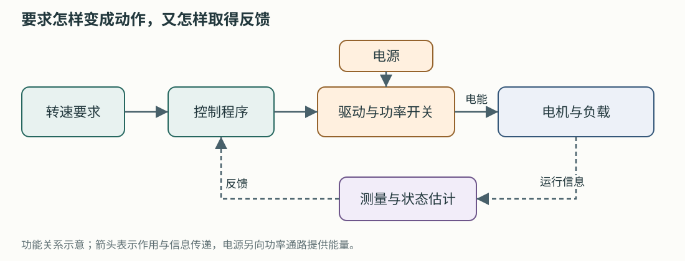
这张示意图由本教程绘制。先沿箭头记住：提出要求 → 程序决定动作 → 电机响应 → 把实际情况送回来。电源向功率通路提供能量，控制程序决定怎样使用它。第 1 章会解释这些词。
再对照你提供的原图
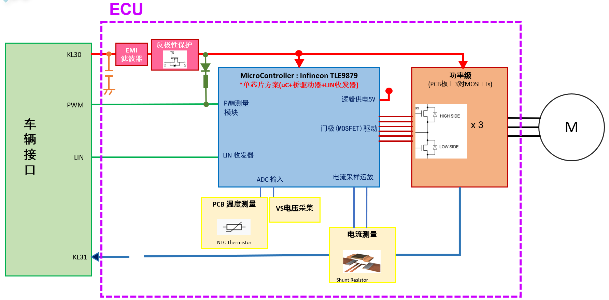
图源：你提供的《电机控制板引线连接位置信号及方案说明.xlsx》，“电机方案”页内嵌原图。此图用于理解功能关系；图中写的是 TLE9879，本次名称沿用 TLE9877，实际型号需核对实物。
第一次只看五处：左侧车辆接口提出要求，中间芯片执行控制，右侧功率级控制电能进入电机，圆圈 M 是电机，下方电流测量把运行信息送回芯片。图中的其他缩写会在后面逐个解释。
你已经接触过 Typhoon，因此可以先把“电机模型”想成电脑里按电机规律计算的对象。接下来要理解的是：这个对象需要什么输入，会产生什么反馈，以及真实控制板如何与它交互。
按这个顺序学习
每次学一章，完成章末小练习再继续。时间是安排学习的参考，遇到不熟的词可以停下来查最后一页。
第一轮先读正文和算例，英文官方链接留到第二轮按需查阅。电机控制中的矩阵推导、寄存器逐位配置和控制器整定，等碰到具体问题时再深入。
已经完成 GUI 练习 时，可以从第 8 章 继续：先阅读官方 TI 外部控制器案例，再按第 9 章把驱动入口、采样反馈、LIN 命令和首轮判据落实到本板。两章的电脑读图练习可先完成；实体复现按各自设备与接口条件安排。
学习时准备什么
一台能打开项目文件的电脑、现有 Typhoon 环境、PowerShell，以及一个记录问题的笔记即可。第 1～5 章的练习主要是画图、计算和离线命令。第 6 章先读已有报告，需要自己运行时再使用 Virtual HIL。
本教程中的命令均明确标注用途。离线编解码只处理数字；Virtual HIL 预演运行电脑内模型。真实板卡的供电、信号测量和反馈注入，需要按实际设备、改装接线图和实验负责人确定的步骤开展。
读本次资料时，分清三种内容
内容
本次例子
学习时怎么用
资料明确提供的信息
引线表建议板卡 9V、上限不超过 10V；分流电阻 0.5mΩ；电机 10 极
认识当前对象；同时保留来源和适用位置
为软件预演选定的条件
模型内控制器、理想角度、等效星形参数、特定负载和事件
学习模型和数据流程；查清采用这些条件的原因
需要进一步确认的信息
实际芯片及固件、栅极调理、采样窗口、缺失电机参数
整理成可以回答的具体问题
板级事实和待确认项集中维护在样机接入记录 与样机配置 。软件预演条件维护在预演配置 。教程解释这些信息的含义，后续参数更新以对应配置和接入记录为准。
学完后，用这五件事检查自己
能从“转速要求”出发，画出控制、驱动、电机和反馈的关系。
能在资料中找到一条线，说明它的功能、方向和参考点；不清楚的地方能具体写出来。
能手算并用工具核对一组 LIN 命令与状态。
能解释预演报告中的参考、实际转速、电流、转矩和事件。
能区分“命令编码正确”“板卡接受命令”“模型响应正确”这几个不同的证据。
现在从第 1 章 开始。已经看过原先的准备指南，也建议按这个顺序补一遍基础。
1. 电、电路与整套系统
学习入口 · 下一章：芯片、控制板与引线
本章目标：看懂“电源提供能量，控制器决定怎样使用能量，测量把运行情况送回来”这件事。只需要四则运算。
1.1 先把电压和电流分开
电压 表示两点之间的电势差，单位是伏特 V。说“这里是 9V”，完整含义应当是“这里相对于某个参考点是 9V”。电源正端相对负端的电压，就是常见的供电电压。
电流 表示电荷流动的快慢，单位是安培 A。电流沿电路的通路流动；同一个电源电压下，实际流过多少电流，还取决于连接的对象及其工作状态。
可以暂时用水路帮助想象：压力差对应电压，流量对应电流，形成通路后才能持续流动。这个比喻只帮助理解“推动条件”和“流动结果”，电机和开关电路的具体行为仍要按电路规律分析。
因此，“给板子 9V”与“电机流过 10A”说的是两种量。看到数字，先看单位，再看它属于哪个位置。
1.2 电阻：用一个简单关系认识电路
电阻 描述元件阻碍电流的程度，单位是欧姆 Ω。对于理想电阻：
电阻两端的电压 = 通过它的电流 × 电阻
V = I × R
例如，一个 2Ω 的电阻流过 3A，电压就是 3×2=6V。这是计算例子。
本次材料有两个名字相似、用途不同的电阻：
名称
提供值
在哪里、做什么
电机“相电阻”
0.005Ω = 5mΩ
描述电机绕组的电阻特性；具体参数定义还需对应模型
电流采样用的分流电阻
0.0005Ω = 0.5mΩ
在测量通路产生很小的电压，供芯片判断电流
“分流电阻”也叫 shunt。在这个测量用途里，它串入被测电流的通路，通过两端电压推算电流。
对 0.5mΩ 分流电阻：
10A × 0.0005Ω = 0.005V = 5mV
5mV 很小，后面需要放大和采样。第 4 章会沿着这 5mV 继续往下讲。
1.3 先认识常用单位
写法
换算
本次会在哪里遇到
m，毫
千分之一，0.001
mV、mΩ、ms
μ，微
百万分之一，0.000001
μH、μs
k，千
1000 倍
kHz、kbps
H，亨利
电感单位
电机绕组电感
Hz，赫兹
每秒重复次数
PWM 频率
rpm
每分钟转数
电机转速
N·m
转矩单位
电机的转动作用
这次的 11μH = 0.000011H。0.005Ω 和 0.0005Ω 相差 10 倍，抄参数时数一个零就会产生很大偏差。建议始终连同单位一起抄写。
1.4 电感和电容：它们会影响“变化有多快”
电感 可以先理解为会抵抗电流快速变化的特性。电机绕组具有电感，因此开关电压虽然跳变，电流通常会连续变化，并带有起伏。
电容 可以储存电荷，常用于平缓供电变化。你在原理图中看到电源旁边接到地的电容，很多都在帮助供电或测量电路工作。
本次先记住一个用途：分析波形时，“电压发生变化”和“电流、转速随之变化”可能发生在不同时间。电路和机械对象都有自己的响应过程。
1.5 一套电机系统有三条需要同时看的线索
沿着下面三句话读系统图：
能量从哪里来 ：电源经过功率电路，把能量送到电机，再变成机械运动和损耗。要求从哪里来 ：上位机或车辆控制器给出要求，控制板把要求转换成开关控制。实际情况怎样回来 ：测量电流、电压等量，控制程序据此调整输出、估计状态或进入保护。
本教程绘制的功能关系示意图 例如要求 2240rpm，程序不会只把“2240”写到某根电机线上。它要决定开关怎样切换，并持续查看反馈。转速是这整套过程产生的结果。
负载 指电机正在带动的对象给它的机械作用，比如泵送液体产生的阻力。负载变重时，即使要求的转速不变，电机需要的转矩和电流也可能变化。
1.6 控制器、被控对象和闭环
控制器 负责根据要求和反馈决定下一步动作。这里主要是控制板中运行的程序。
被控对象 是被它调节的系统。这里可包括逆变器、电机和机械负载，具体划分取决于测试边界。
反馈 是反映对象状态的信息。反馈重新进入控制器，形成回路，就叫闭环 。
用熟悉的空调类比：设定 26℃，测量室温，再决定制冷强度。电机控制也需要设定、反馈与调整，只是对象和时间尺度不同。
一个最简单的转速误差例子：
参考转速 = 想达到的速度 = 2400rpm
实际转速 = 测量或模型给出的速度 = 2350rpm
误差 = 参考 - 实际 = 50rpm
“误差是多少”是一件事，“误差是否允许”还需要测试事先给定判据。不能看到 50 就自动认为合格或不合格。
1.7 到 Typhoon 里，哪些东西变成了模型
你在 Typhoon 原理图里放置电源、开关、电机，连接测量信号，就是在给计算程序描述对象。它按设定参数和计算规律输出各时刻的电流、速度等结果。
当前 PMSM 软件预演把控制器、逆变器、电机和负载都放在模型里。程序里的参考值变化，模型里的控制器跟着调整，模型里的电机响应，数据再保存成波形。
后续实体 HIL 的目标是让真实控制板参与闭环：板卡给出驱动，仿真系统计算对象响应，再经适配电路把反馈送回板卡。这个过程需要真实电气接口和实时运行条件，第 4 章展开。
1.8 本次看到几个电压，怎样避免混淆
引线表给这块寄送测试板的说明是建议 9V，不超过 10V 。电机方案图上的 13.5V 是电机额定点资料。芯片手册还会列芯片自身的工作范围。
三个数字描述的对象和条件不同。准备实物供电时，首先使用针对本块测试板的说明，并由负责人结合固件和改装状态落实。教程里模型的 9V 则是预演配置中的理想直流母线值。
1.9 小练习
先自己写答案，再展开核对。
0.5mΩ 是多少 Ω？10A 通过它产生多少 mV？
参考为 1800rpm，实际为 1770rpm，按“参考减实际”误差是多少？
如果只有命令输入，反馈线断了，还能说正常闭环已经建立吗？
“芯片可以在某个电压范围工作”能否直接决定整块改装板的供电？还要看什么？
参考答案
0.0005Ω；10×0.0005=0.005V=5mV。
30rpm。
还不能。需要确认实际反馈路径、控制器使用的信息及对应响应。
需要看板级说明、其他器件、改装状态和固件条件。本次先遵循测试板提供方给出的板级条件。
能用自己的话说清“要求—动作—响应—反馈”，就可以进入第 2 章 。
2. 芯片、控制板与 18 条引线
上一章：电与整套系统 · 学习入口 · 下一章：电机与控制
本章目标：读懂控制板上的各部分分别做什么；看到 GH1、SHP 等标签时，知道从哪里开始查。先学读图，再考虑具体接线。
2.1 芯片和控制板是什么关系
芯片 IC 是把电子功能集成在一个小封装里的器件。控制板 PCB 则把芯片、电阻、电容、功率开关和连接器等，通过板上的铜线连接起来。
芯片型号告诉我们这个器件具有什么能力。整块板实际怎样工作，还取决于外围电路和内部运行的程序。
MCU，微控制器 ，可以先理解为专门执行控制任务的小计算机。它有执行程序的处理器、保存程序的存储器，以及收发信号的电路。
固件 firmware 是烧写到板卡上运行的程序，包括启动、通信、控制、保护和状态管理。芯片支持 FOC，并不等于当前固件一定采用某个特定 FOC 算法；这要看实际程序和说明。
2.2 在芯片内部先找五个功能
下图来自你提供的 TLE9877QXA40 芯片手册，第 10 页，Figure 1。图片保留整页，点击可放大。
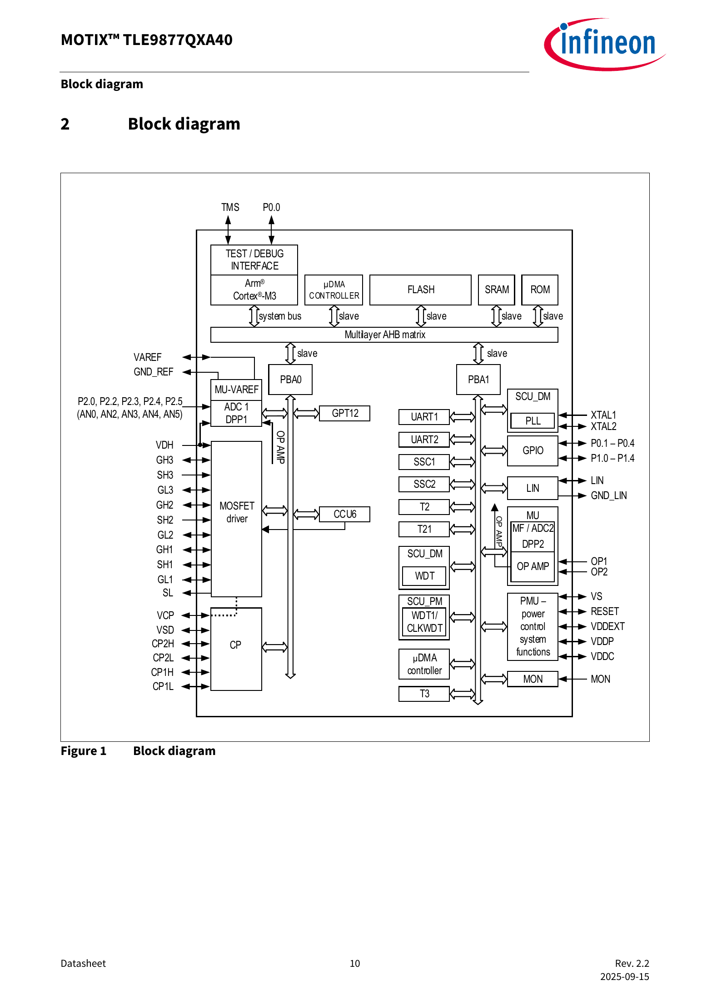
按以下顺序看，不必一次理解所有方框：
图中名称
先怎样理解
与本次测试的关系
Arm Cortex-M3
执行程序的处理器
运行控制与通信逻辑
FLASH / SRAM
程序存储和运行时工作区
固件版本、运行变量属于这一层
CCU6 / PWM
产生定时开关控制的模块
配合驱动器控制六路功率开关
MOSFET driver
把控制意图变成适合栅极的驱动
对应 GH/GL 等输出
OP AMP / ADC / LIN
小信号放大、模拟转数字、总线收发
对应反馈测量和外部命令
ADC，模数转换器 ，把连续变化的电压转成程序可以读取的数字。运算放大器 OP AMP 在本场景中帮助放大小电流采样电压。LIN 收发器 负责总线电气信号的收发，后面还要有协议和固件配合。
手册及Infineon 官方产品说明 确认这一芯片集成处理器、LIN、采样与桥驱动等功能；功率级的六个 MOSFET 位于外部电路。
2.3 MOSFET：受控制的功率开关
MOSFET 在这里可以先看成电子开关。常见三个端子是 G、D、S：
端子
中文
在本场景中的作用
G，Gate
栅极
接收驱动，控制开关状态
D，Drain
漏极
电流通路的一端
S，Source
源极
电流通路的另一端，也是理解驱动电压的重要参考
“栅极驱动”关注的是 G 相对于 S 的电压，即 VGS。上桥 MOSFET 的源极会随相节点变化，所以栅极相对地的电压，与栅极相对源极的驱动电压，需要分别理解。
栅极驱动器 负责较快地给栅极充放电，使 MOSFET 按要求开关。电机的大部分功率电流经过功率开关与绕组；控制信号负责决定这些开关的动作。
2.4 三相桥：为什么有六路驱动
三相电机有 U、V、W 三个外部相节点。每相由一只上桥开关和一只下桥开关构成一个桥臂，三相共六只。
以 U 相为例：
母线正端
│
上桥 MOSFET ← GH1 驱动其栅极
│
├────────→ U 相节点，连接电机
│
下桥 MOSFET ← GL1 驱动其栅极
│
低端公共节点／分流测量路径
V、W 两相分别对应 GH2/GL2、GH3/GL3。上桥和下桥按控制规律切换，三相绕组中形成所需电流。
死区 dead time 是同一桥臂切换时预留的短暂空档，帮助避免上下开关同时导通形成直通。真实电路还存在二极管、延迟和诊断，所以上面只用于理解结构。
2.5 对着你给的截图读一遍
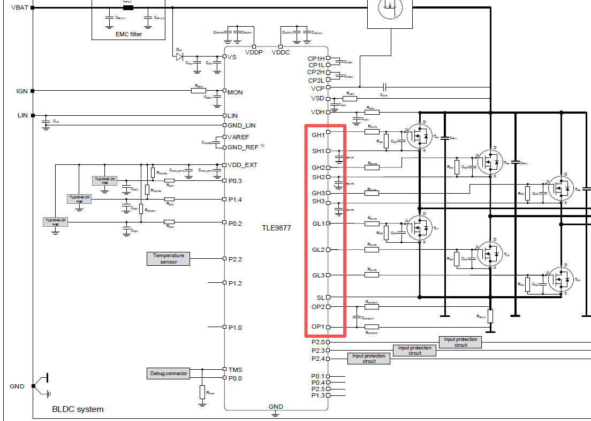
图源：你提供的控制边界截图，原样收录。它是理解器件连接的材料，实际改装接线需另有对应图纸。
按四步找：
中间写 TLE9877 的大框是芯片，右边六个开关符号是外部功率 MOSFET。
沿 GH1 找到右侧第一只上桥 MOSFET 的 G 端，再沿 GL1 找到对应下桥 G 端。
找右下方 Rshunt，这是把电流转成小电压的分流电阻；OP1、OP2 通向采样链。
再看左边的 LIN、供电和其他输入，区分“要求怎样进来”与“功率怎样送出去”。
原图左侧还有 Hall 字样的器件示意。针对本次电机，提供的引线说明写“无位置传感器”，因此这张通用应用图不能用来认定本次样机装了霍尔传感器。红框也只帮助定位图上信号，最终保留与替代哪些电路，应看实际 HIL 改装图。
2.6 GH、GL、SH、SL 分别是什么意思
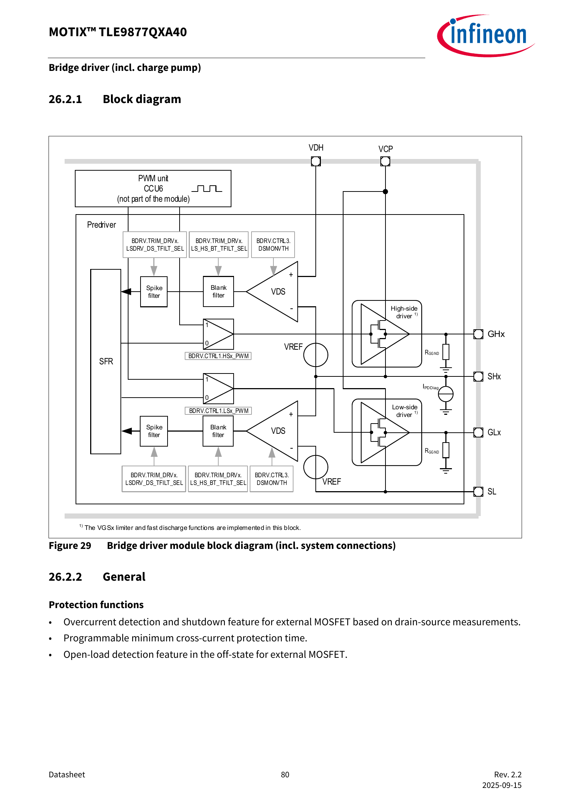
图源：所提供手册，第 80 页，Figure 29。第一次只看最右侧 GHx、SHx、GLx、SL 四个名称，x 表示 1、2、3 中的一相。
名称
芯片图中对应的功能
读资料时要区分什么
GHx
上桥栅极驱动
查对应相及相对哪个参考点测量
GLx
下桥栅极驱动
查低端参考及信号调理
SHx
相应上桥源极／相节点相关连接
与 GHx 配合理解上桥驱动参考
SL
低端源极公共节点相关连接
与采样通路及公共参考有关
SHP、SHN 是板级引线表中的采样标签；SH1、SH2、SH3 是芯片图里的另一组名称。 它们名字相似，查表时要逐字看清。SHP/SHN 到 OP1/OP2 的具体连接，需要实际板图核对。
2.7 18 条线先按功能分组
完整序号、焊接位置和原始出处见样机接口表 。先用下表建立分类，避免一口气背 18 个名称。
功能组
本次标签
从板卡角度怎样理解
供电和参考，3 条
BAT、GND1、系统地
为板卡供电，建立相应参考；接地与隔离方案需结合平台
外部命令，2 条
PWM-IN、LIN-IN
接收运行要求；LIN 线上也会有板卡响应
功率与相关节点，5 条
U、V、W、VM、SL
与三相桥、母线和低端节点有关；实际保留／断开／替代方式待确认
电流采样，2 条
SHP、SHN
把差分采样电压送向板卡测量链
六路驱动，6 条
GH1～3、GL1～3
从 MOS 栅极位置引出驱动信息，供适配电路接收
VM 原文是“母线电压线，控制板产生”，这还不足以把它定义成一个 HIL 模拟输出注入端。U/V/W 也属于电气节点，不能只因为名称像“信号”就当作低压测量输入。
2.8 “输入”和“输出”要先说站在哪一边
同一根驱动线，对板卡可能是输出，对接收它的 HIL 调理电路则是输入。反馈线刚好反过来。
读接口表时，可以在每条记录旁补四项：由谁产生、由谁接收、相对哪里测量、采用什么范围与时序 。四项里有未知，就写具体未知项。
例如 GH1 可以先写：“板卡功率 MOS 栅极引出 → 待确定调理电路 → HIL 驱动捕获；参考点、幅值与共模待确认。”这比只写“数字 IO”更有助于后续落实。
Excel 的“18V/2=9V”还没有解释分压发生的位置、实际输出端和上桥共模处理。因此本教程用它说明待确认问题，实际 HIL 输入电平需按转接板规格确定。
2.9 看芯片脚号时再打开这一页
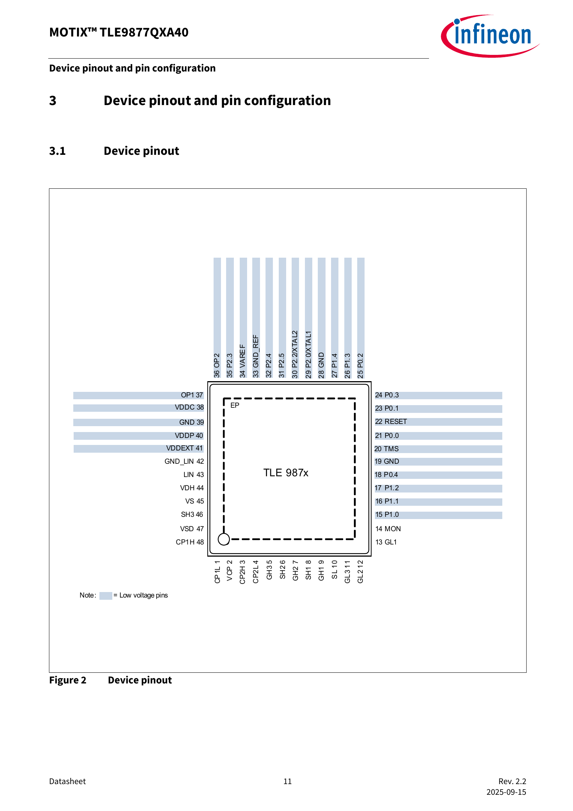
图源：所提供手册，第 11 页，Figure 2。这里的数字是芯片封装脚号 。Excel 18 条引线前面的数字是表格序号 。另外，M4、R33、C27 是板上器件位号，分别表示某个 MOSFET、电阻、电容。三套编号分别用于三个层次。
2.10 小练习
芯片、控制板、固件分别是什么？
GH1 与 U 相节点各在什么位置，作用有什么不同？
芯片图里的 SH1 和板级标签 SHP 能否仅凭名称当作同一根线？
若别人说“这是一根 9V 数字信号”，至少还要问哪两类信息？
参考答案
芯片是器件，控制板连接多个器件，固件是在其上执行的程序。
GH1 控制上桥 MOS 栅极；U 是桥臂中点连接电机的功率节点。
需要查实际连接。相似名称不能替代电路映射。
参考点、实际范围与共模、是否已调理，以及接收端的规格和时序要求，至少应明确其中相关项。
接下来进入第 3 章 ，把这些开关与电机转动联系起来。
3. 电机怎样转，控制怎样起作用
上一章：芯片、控制板与引线 · 学习入口 · 下一章：反馈与 HIL
本章目标：把“电流、电磁转矩、转速”连成一条因果关系，并认识控制程序中最常出现的词。第一遍理解方向和作用即可。
3.1 先认识电机里面的两个部分
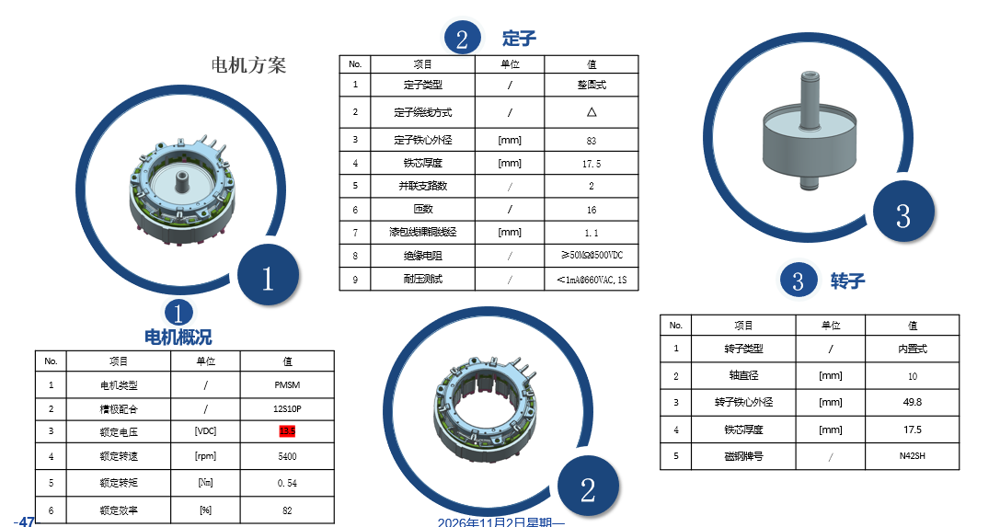
图源：引线 Excel，“电机方案”页第一张原图。
看图中间的定子 和右侧的转子 。定子相对外壳固定，含有绕组；转子与轴一起旋转。本次资料写 PMSM、内置式转子、12 槽 10 极、Δ 绕组。
PMSM 全称 Permanent Magnet Synchronous Motor，中文是永磁同步电机。转子含永磁体，定子绕组中的电流建立磁场，两者相互作用产生转矩。
“同步”表示正常同步运行时，转子与定子旋转磁场保持对应的转速关系。它不表示转速永远准确，也不表示电机天然知道外部命令。
3.2 三相是什么意思
可以先把 U、V、W 理解为三个按规律配合的电流通道。合适的三相电流能合成旋转的磁场，使转子持续受到转动作用。
你会看到三条电流曲线随时间交替变正、变负。负电流 表示相对于选定正方向反向流动，本身是正常的电机运行现象。是否异常，要结合幅值、相位、工况和判据判断。
Δ，三角形接法 与Y，星形接法 描述绕组之间的连接。相同的三个外部端子，并不意味着内部连接相同。绕组支路电流、外部线电流和参数定义也可能不同。
本次提供的电机是 Δ 接法，软件预演采用明确假设的等效星形参数。要建立样机对应模型，需先对齐绕组参数与目标组件的定义，所需条件见接入记录 。
3.3 转速与转矩是两种量
转速 是转得多快，常用 rpm，即每分钟转数。转矩 是推动物体转动的作用，单位 N·m。相同转速下，负载较重，可能需要更大的转矩。
拿手摇一个带阻力的轮子：你可以让它一直保持同样快，但阻力增大后，需要更用力。电机也会在相同转速下改变电流和电磁转矩。
电磁转矩 来自电机中的电磁作用。负载转矩 描述外部机械负载对轴的作用。按适当的符号约定，电磁转矩超过负载与损耗所需的部分用于加速；接近平衡时，转速趋于稳定。
转动惯量 描述对象改变转速有多困难。它越大，相同净转矩下加减速越慢。电机尺寸可以提供几何线索，但不能代替已经确认的惯量参数。
3.4 10 极为什么是 5 极对
一对磁极包含一个 N 极和一个 S 极，所以 10 极对应 5 极对。资料中的 12 槽描述定子结构，不能拿 12 去当极对数。
电机控制还会用到机械角度 和电角度 ：
机械转一圈：轴转过一整圈
对于 5 极对电机：对应 5 个电角度周期
电频率（Hz）= 机械转速（rpm）÷ 60 × 极对数
例如 2400rpm = 每秒 40 圈，5 极对时电频率是 200Hz。200Hz 是这个例子中的电频率 ；开关 PWM 的频率是另一个量，外部 PWM-IN 命令频率又是第三个量。
3.5 PWM 为什么能控制电机
PWM 是脉宽调制。一个重复周期内，高电平持续时间占总周期的比例叫占空比 。
周期 T = 一次完整重复的时间
频率 f = 1 ÷ T
占空比 D = 高电平时间 ÷ 周期
例如每 50μs 重复一次，就是 20kHz。高电平持续 20μs，占空比为 40%。这是算例；20kHz 也是当前软件预演的开关设定，实际样机频率仍需确认。
功率开关的端点电压在开关过程中变化，绕组的电感让电流按相应规律变化。控制器调节三相开关时序，从而影响电流、转矩和转速。
这里的“40%”首先描述脉冲时间比例。若 PWM 被用作外部通信命令，它表示什么运行状态，还要查专门的协议映射。第 5 章会结合本次 PWM-IN 图表解释。
3.6 闭环为什么要一层层调节
一种常见结构是外层调转速、内层调电流。可以按四步理解：
转速环查看“想多快”和“现在多快”的差距。
根据差距提出转矩或电流要求。
电流环查看实际电流是否达到要求，再调整电压控制量。
PWM 模块把电压控制量转换为开关动作，电机响应后再反馈。
控制环 就是持续执行“比较—调整—反馈”的过程。内层通常需要更快地处理电流变化，外层按机械变化的特点工作；实际执行周期由固件决定。
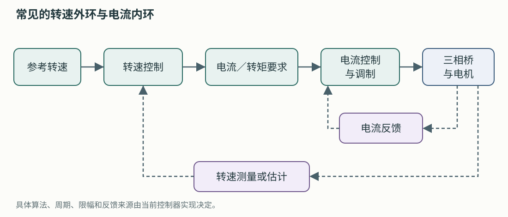
本教程绘制的功能关系示意图 如果上位机每 20ms 更新一次运行命令，芯片仍然可以在其间执行很多次内部控制。通信更新周期与控制周期分属不同层次。
3.7 FOC 到底在做什么
FOC，磁场定向控制 ，是一种组织电机控制计算的方法。转子磁场一直在转，直接盯着三条起伏的相电流处理比较复杂。FOC 把电流换到跟随转子旋转的参考方向上，得到常见的 d、q 两个分量，再分别调节。
第一轮可以这样理解：d 方向与转子磁场相关，q 方向主要与转矩产生相关。不同电机类型和运行区域下，具体电流分配会变化，不能把“d 永远为零”当成通用规则。
沿着软件图，你可能见到这些名称：
词
在流程里做什么
第一次学到哪一步
Clarke / Park 变换
把三相电流换到便于控制的坐标
认识输入输出及为什么需要角度
PI 控制器
根据当前误差和累计误差调整输出
理解它会持续修正，先不整定参数
SVPWM
把电压要求变成三相开关时间
知道它位于控制计算与开关之间
MTPA
在一定条件下选择电流分配，提高每单位电流的转矩效果
知道它会影响 d/q 电流指令
限幅
把某个控制量限制在设定范围
查明限的是电流、转矩还是其他量
这些术语用来帮助读模型。当前软件预演使用示例控制器并作了明确修改；本次样机固件采用什么算法和参数，需要由固件说明确认。
FOC 与采样关系的进一步参考：TI 单分流 FOC 应用说明 ，第 2 节。第一遍看框图即可。
3.8 “无感”为什么仍然需要测量
这里的无感 sensorless 通常指没有专门的转子位置传感器。程序仍要利用电流、电压、模型参数等信息估计转子状态。
状态估计器／观测器 是根据可测量的量和模型，推算难以直接测量状态的算法。电机运动产生的反电动势 可以提供状态信息。采用反电动势估计的方法在低速时信息较弱，因此常需要专门的启动和切换过程；不同算法可能采用其他办法。
一个便于理解的示例过程是：准备和检查 → 对齐或建立初始状态 → 按预定规律升速 → 满足条件后采用估计角度闭环 → 正常运行。它用于说明“启动是一段过程”，实际样机顺序以固件为准。
Microchip 的官方无感单分流示例 给出了其中一种实现，可作为原理补充。
3.9 为什么模型能转，样机接入后还要验证
当前预演直接使用模型内部的转子角度，控制器容易取得所需位置。真实无感固件需要自己估计，还要面对采样、延迟、参数偏差和启动条件。
因此预演很适合让你观察“调速和加负载后，电流、转矩、转速怎样变化”。要回答真实样机是否能启动、能否正确保护，则需要把实际固件及其反馈路径接入对应测试。
3.10 对着参数截图读名字
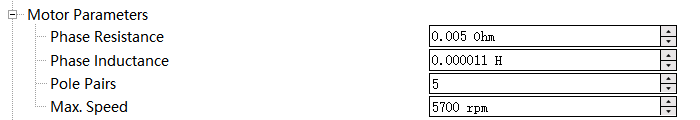
图源：你提供的参数截图，原样收录。
截图或模型字段
含义
本次使用时要补充什么
Phase Resistance / Rs
绕组电阻参数
确认“相”的定义及 Δ 与目标模型的对应
Phase Inductance
绕组电感参数
确认测量条件、参数口径及与 Ld/Lq 的关系
Pole Pairs
极对数
当前提供值 5，与 10 极一致
Max. Speed
某配置中的最大速度设置
确认作用位置及与固件限幅的关系
Ld / Lq
d/q 方向电感
样机配置中仍有待补项
PM flux
永磁磁链，反映永磁磁场与绕组的联系
需要参数来源或反电动势常数的对应定义
Inertia
转动惯量
需要轴上对象及模型范围
模型要求的参数可以查 Typhoon PMSM 组件说明 。先对照组件参数名称，再看公式。
3.11 小练习
负载增加、参考转速不变时，为什么仍可能看到电流变化？
5 极对电机以 1800rpm 旋转，对应电频率是多少？
“无位置传感器”和“没有任何测量”有什么区别？
为什么只有一个 11μH 数字，还不足以直接认定 Ld、Lq 都已经确认？
参考答案
控制器需要产生更多转矩抵消增加的负载，常通过改变电流实现。
1800÷60×5=150Hz。
前者仍可用电流、电压等信息估计位置；后者没有建立这种测量依据。
需要知道这个数的定义、测量条件、绕组接法，以及目标模型要求。Ld 和 Lq 可能不同。
下一章沿着反馈路径，看看控制程序怎样取得这些信息。
4. 电流怎样测，HIL 怎样接进闭环
上一章：电机与控制 · 学习入口 · 下一章：LIN 与 PWM
本章目标：理解从“电流”到“程序读数”的每一步，并画清真实板卡和仿真模型的交界。
4.1 沿着 10A 走到程序里
电流不能直接变成程序里的变量，需要经过测量链。对本次单分流场景，可以按下面的功能顺序理解：
被测电流
→ 分流电阻两端的小电压
→ 滤波与放大
→ ADC 采样得到数字
→ 固件按标定关系换算
→ 电流重构、控制与保护
这条链里，某一步的比例、正负号、偏置或时刻出现问题，都会改变控制器“看见”的电流。
4.2 差分电压与共模，先做一道算术
SHP、SHN 是本次板级电流采样引线。差分电压 是两点相减；共模电压 可以先理解为这两个点整体相对参考地的位置。
例 A：SHP=0.005V，SHN=0V，差值=0.005V
例 B：SHP=1.005V，SHN=1V，差值=0.005V
两例差值相同，但两端相对地的位置不同。某个输入电路能正确测例 A，并不意味着它必然能接受例 B。实际允许范围要查芯片、板级电路和调理电路。
这两个例子只解释差分与共模，均不作为实际注入设定。
4.3 看懂芯片手册的采样图
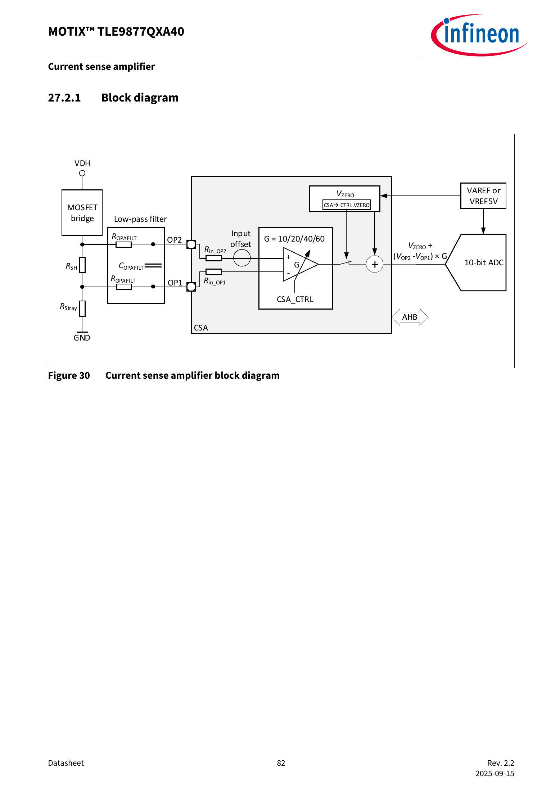
图源：你提供的手册，第 82 页，Figure 30。
按从左到右的顺序看：
RSH 是分流电阻，电流在它两端产生电压差。
Low-pass filter 是低通滤波，帮助抑制不需要的高频干扰，同时也会影响动态响应。
OP2、OP1 是芯片输入名称；右边的放大器用增益 G 放大差值。
VZERO 给测量信号设置零点偏置，右侧 ADC 把电压转换成数字。
图中关系为：
送入 ADC 的电压 = VZERO + (VOP2 - VOP1) × G
这说明同样的分流电压，采用不同增益、偏置或接线极性，会得到不同读数。板级 SHP/SHN 与芯片 OP2/OP1 的映射仍需按实际连接确认。
计算例子：为什么 5mV 和 2.6V 都可能出现在讨论里
假设某条测量链的 G=20，VZERO=2.5V，正方向的 10A 对应 5mV：
分流电压差：10 × 0.0005 = 0.005V
放大后的增量：0.005 × 20 = 0.1V
送 ADC 的电压：2.5 + 0.1 = 2.6V
这里的增益和偏置是教学假设。5mV 属于放大器前的小差分量，2.6V 属于假设的放大偏置之后；是否可在某处注入，取决于真实电路。向前级注入后级数值，会把量程和物理含义弄错。
“只差一点偏置”也可能影响很大。对 0.5mΩ 分流电阻，额外 1mV 差分电压等效于 2A。这个算例说明为什么需要认真确认零点和标定。
4.4 单分流为什么能看三相电流
单分流 指用一个公共电流测量位置，在不同开关状态和采样时刻取得信息，再重构所需的相电流。
最容易误解的一点是：公共分流电流会随开关状态改变，它不是把 Ia、Ib、Ic 简单求平均。对于理想三线电机端口，三条外部线电流在同一时刻满足电流和接近零；这条电路约束本身也不足以告诉我们某一时刻分流电流是多少。
固件要知道“此刻哪个开关组合生效”，再把此刻分流读数解释为相应电流信息。有效电平持续得足够久，测量链稳定、ADC 在合适时刻采样，信息才可用。
TI 官方应用说明 专门讨论单分流的有效测量时间及重构问题。学习阶段先理解“开关状态、模拟反馈、采样时刻必须对应”。
4.5 同样的幅值，晚到也会改变含义
假设某次有效开关状态持续一小段时间，固件安排在中间采样。如果仿真反馈经过计算、输出和调理后到得太晚，ADC 可能读取到前一状态或切换过渡过程。
因此检查反馈要分两步：
要检查什么
典型问题
数值关系
10A 对应多少差分电压？正负号、增益和偏置是否正确？
时间关系
这个电压代表哪个开关时刻？输出延迟和稳定时间是否允许 ADC 正确采样？
这也是为什么低频 LIN 状态读数很适合监视，却难以替代高速电流反馈或快速保护动作的时间证据。
4.6 HIL 是在测试什么
HIL 是 Hardware-in-the-Loop，硬件在环。针对控制器的 HIL 测试保留真实控制器，让仿真器实时计算它所控制的对象，并通过电气接口交换驱动与反馈。
可以对照三种情形：
情形
控制器在哪里
电机和负载在哪里
主要能学习或验证什么
真实运行系统
真实板卡
真实电机及负载
实际系统行为，需对应设备与操作条件
当前软件预演
模型内控制器
模型内对象
模型、事件、采集、分析和运行现象
后续控制器 HIL
真实板卡
实时仿真对象
在确认的接口与模型范围内验证板卡行为
实时 指仿真计算及 I/O 要跟上真实控制器的时间。真实板卡不会因为电脑计算慢而自动等待。当前 Virtual HIL 则在电脑上按仿真时间推进，适合预演，不连接外部板卡形成真实闭环。其虚拟 I/O 回环规则见 Typhoon 官方说明 。
4.7 把未来的闭环画出来
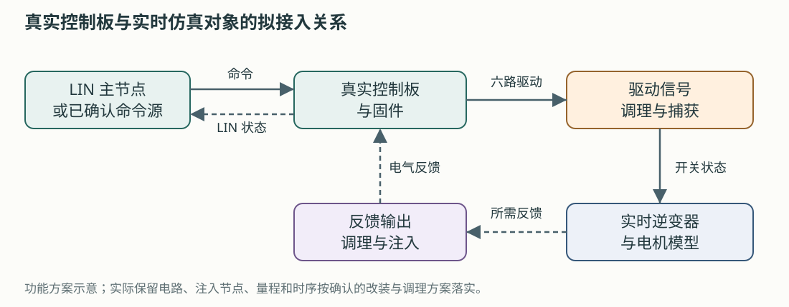
本教程绘制的功能关系示意图 这是拟接入的功能关系图 。具体留下多少功率电路、在哪里注入、哪些诊断需要保留，要由实际改装图确定。尤其是 GH/GL 来自 MOS 栅极，SHP/SHN 来自小信号采样位置，二者量程和参考方式不同。
信号调理 可以包括分压、放大、偏置、滤波、隔离和电平转换，使两端电气条件匹配。隔离 用于控制两侧电气连接关系；是否隔离、怎样建立参考，需按平台和转接板设计执行。
HIL 模型里电机产生的“10A”，首先是计算结果。经反馈接口送回板卡的是相应的电气测量信息，例如经确认的采样端电压；控制器 HIL 中通常不需要通过电机功率线向板卡送回那 10A 功率电流。
4.8 你现在就能准备的接口笔记
每条路径都用下面的句式记录：
发送方：谁产生这个量？
物理量：电压、电流、开关状态，还是协议字段？
位置：从哪一个节点引出、注入哪里？
接收方：哪个设备、哪个通道使用它？
数值：单位、比例、偏置、方向、范围、参考点？
时序：何时更新、何时采样、允许多少延迟？
依据：哪份资料明确给出，哪些仍需答复？
以 SHP/SHN 为例，你已经可以填“分流设计值为 0.5mΩ”；对注入位置、芯片端映射、共模和采样窗口，先保留具体问题。这样拿到答复后能直接补成接口合同。
4.9 小练习
20A 对应 0.5mΩ 分流电阻两端多少 mV？
上述假设 G=20、VZERO=2.5V 下，这一正方向电流对应的 ADC 输入电压是多少？
为什么模拟反馈幅值正确，还可能使电流重构出错？
当前软件预演中使用模型内部角度，能据此证明样机无感启动已经通过吗？需要补什么证据？
参考答案
20×0.0005=0.01V=10mV。
2.5+0.01×20=2.7V，仍只是教学假设。
可能存在延迟、采样时刻、开关状态对应、稳定时间或极性问题，需要分别观测。
还需实际固件、对应反馈、接口及时序条件下的启动和切换证据。
下一章开始做无需接板的通信练习。
5. LIN 与 PWM：边算边做
上一章：反馈与 HIL · 学习入口 · 下一章：Typhoon 预演
本章目标：弄懂外部命令怎样表示，并亲手解读一组字节。所有命令都是离线计算 ，无需连接板卡，不会发送真实总线信号。
5.1 先区分三种软件
软件或文件
在哪里、做什么
板卡固件
运行在芯片上，执行实际启停、控制、通信和保护
项目 Python 工具
运行在电脑上，检查资料、编解码、调用仿真和整理结果
LIN.ldf
描述总线节点、帧、字段和换算规则的文件，工具按它解释数据
LDF 可以理解为本次通信的“字典和排班表”。有了字典，电脑能计算报文；要让报文真正出现在 LIN 线上，还需要 LIN 主节点设备、收发器、驱动及实际调度。
5.2 两种外部调速接口，各怎样表达要求
LIN 通过数字报文表达命令，并能按协议读取状态。PWM-IN 通过输入脉冲的占空比和其他条件表达命令。本次两者都出现在资料里，优先级、超时切换和非活动状态仍需确认。
另外六路 GH/GL 也可能呈现 PWM 开关波形，它们负责桥驱动，与 PWM-IN 的调速语义和时间尺度不同。
5.3 先用一分钟学会字节和十六进制
bit，位 ，取值是 0 或 1。byte，字节 ，含 8 位，可以表示 0～255。
十六进制 用 0～9 和 A～F 表示数字，A=10，F=15。前缀 0x 表示十六进制；报文串中常省略前缀。
0x64 = 6×16 + 4 = 十进制 100
0xFF = 15×16 + 15 = 十进制 255
0x20 = 十进制 32 = 二进制 0010 0000
所以 data=[100,0] 和 data_hex="64 00" 可以描述同一组两个字节。看到不同显示方式，先统一进制再比较。
5.4 本次 LIN 上的角色与帧
LDF 给出主节点 ECU、从节点 EWP，速率 19200bit/s。这里 ECU 是命令一方的协议名称，测试时可由合适设备承担；EWP 是板卡一方。
一次常规帧包括帧头 和响应 。主节点发起帧头，规定的数据发布者发送数据和校验。读状态时也需要主节点发起相应帧头，再由板卡回应。ST 官方 LIN 说明，第 2 节
本项目别名
LDF 帧名
6 位 ID
PID
数据长度
数据发布者
control
ControlLIN
0x26，十进制 38
0xA6
2 字节
ECU
status
StatusLIN
0x25，十进制 37
0x25
8 字节
EWP
version
VARIANTLIN
0x27，十进制 39
0xE7
2 字节
EWP
ID 用于标识帧；PID 在 ID 上加了协议规定的校验位。具体硬件 SDK 要求传 ID 还是 PID，要查接口说明。checksum，校验和 用于检查传输数据是否与校验值一致，它不评价转速是否达标。
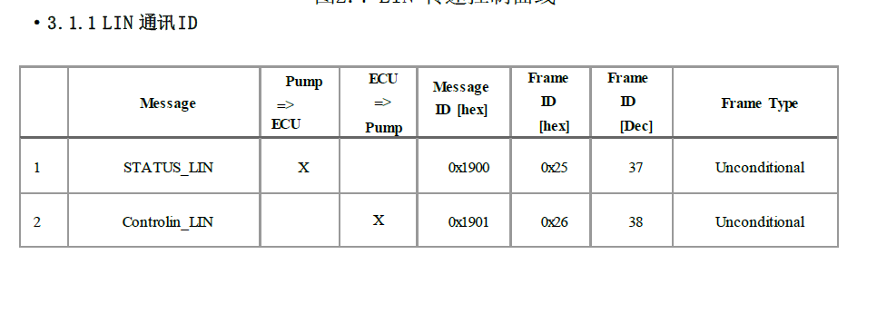
图源：引线 Excel，“lin控制协议”页原图。先看两行的传输方向和 Frame ID。图中 0x1900/0x1901 是另一栏 Message ID 标签，不能拿来替代上表的总线帧 ID。
5.5 练习一：把 2240rpm 编成命令
LDF 中的转速规则是：
转速（rpm）= raw × 22.4
raw 是一个字节里的原始码，常规有效范围 0～254
255，即 0xFF，按本次资料处理为无效值
手算 2240÷22.4=100，十六进制是 0x64。控制帧第一个字节就取 64。
第二个字节还包含后运行设置 PostSet ，位于整帧 bit 12～14，也就是第二个字节的 bit 4～6。普通 no_post 设置为 0，其余未分配位按本次工具约定填零，所以得到：
控制帧的数据域：64 00
在 PowerShell 中，一次执行一条命令：
Set-Location 'D:\Typhoon\lab-workflow'
.\lab.ps1 lin-encode --rpm 2240 --post-set 0 --json
Set-Location 是进入项目目录；.\lab.ps1 调用项目入口；lin-encode 选择编码；--rpm 指定转速；--json 让结果按带字段名的文本输出。
在返回的 result 中找这些字段：
{
"data_hex": "64 00",
"requested_rpm": 2240.0,
"encoded_rpm": 2240.0,
"firmware_target_rpm": null,
"sent_to_hardware": false
}
这是摘出的重点字段。null 表示当前没有该数值；false 表示否。firmware_target_rpm 为空，因为离线编码不能告诉我们真实固件限幅后采用什么目标。
再改一次：请求 2250rpm
.\lab.ps1 lin-encode --rpm 2250 --post-set 0 --json
2250÷22.4≈100.446，工具按最近码取整，得到 raw=100，所以编码仍为 2240rpm。这种离散化叫量化 。请求值与编码值要分别保存。
工具采用最近有效码、中点向上；输入范围为 0～5689.6rpm。最高有效码 254×22.4=5689.6rpm。资料中的额定转速、截图最大设置和固件平台上限还有其他来源，具体关系见接入记录 。
5.6 练习二：看看高位字段怎样改变字节
.\lab.ps1 lin-encode --rpm 2240 --post-set 2 --json
PostSet=2，对应第二字节的 bit 4～6，因此该字节数值为 2×16=32，即 0x20。结果数据域为 64 20 。这只是离线打包演示，stage2 的真实持续时间和动作还需固件说明。
本工具允许作为常规输入的 PostSet 为 0～5；6 未定义，7 为初始状态。后运行是状态机行为，需要确认触发、取消、目标和退出条件。
5.7 练习三：把编码的命令解读回来
.\lab.ps1 lin-decode --frame control --data '64 00' --identifier 0xA6 --identifier-kind pid --checksum 0xF4 --json
预期看到：ControlSetspeed 的 raw=100、value=2240；PostSet 的 label=no_post；checksum_verified=true。
--data 只放数据域。PID、checksum、break 和 sync 均不拼进这串数据。当前工具对这三个业务帧使用增强校验准备，真实设备设置仍需与固件和抓包核对。
5.8 练习四：逐字节读状态
使用这一组教学样例：
64 64 5A 50 0A 00 00 00
从 byte 0 开始计数，前五个字段这样读：
字节
十六进制
十进制 raw
LDF 换算
结果
0，Setspeed
64
100
×22.4rpm
板卡反馈的目标字段 2240rpm
1，ActualSpeed
64
100
×22.4rpm
板卡反馈的速度字段 2240rpm
2，Voltage
5A
90
×0.1V
9V
3，Temperature
50
80
−50℃
30℃
4，Current
0A
10
×0.2A
2A
这些数是报文按字段定义表达的值 。其中电流究竟是哪一测量量、怎样滤波，速度来自什么估计，都要查固件说明；也要保留 HIL 模型自身的速度作为另一列。
.\lab.ps1 lin-decode --frame status --data '64 64 5A 50 0A 00 00 00' --checksum 0x5D --json
最后三字节包含多个位字段。工具返回的 label 帮你按字典解释；例如 ST_RPM_MONI=0 表示转速监测启用。应逐字段阅读，不能把所有状态一律当作“0 正常、1 故障”。
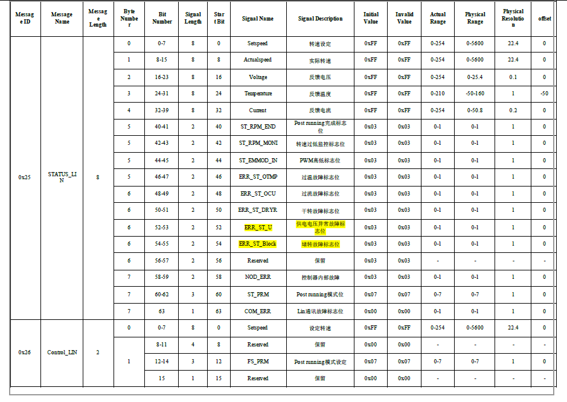
图源：引线 Excel，“lin控制协议”页原表。第一次只对照前五行、Byte Number、Physical Resolution 和 offset。图表与 LDF 的部分名称、枚举和上限存在差异，软件当前用 LDF 名称作主键，差异见接入记录。
5.9 练习五：看看无效值怎样表现
.\lab.ps1 lin-decode --frame status --data '64 FF 5A 50 0A 00 00 00' --json
第二字节变成 FF，ActualSpeed 会返回 raw=255、validity=invalid、value=null。它没有变成“5712rpm”，也没有自动变成零。
此时命令顶层仍可能 status=passed，意思是“成功解析这组输入”。判断读数可用性，还要看字段的 validity。本命令未提供 checksum，checksum_verified 为 false。
继续试版本帧：
.\lab.ps1 lin-decode --frame version --data '01 00' --json
Version 的原码是 1，validity 为 unencoded，因为 LDF 没有给出版本编码解释。应保留原码，取得版本格式说明后再解释成具体版本号。
5.10 10ms 时隙与 20ms 周期怎样读
LDF 的 EWPTEST 调度如下：
时隙开始： 0ms 10ms 20ms 30ms
帧： Control Status Control Status
相邻时隙间隔 10ms；同一帧每两个时隙重复一次，名义间隔 20ms，即每秒 50 次。时隙包含安排给该帧及相应间隔的时间，不应把 10ms 理解成数据一直在传输 10ms。
CheckVersion 是另一张调度表，不能仅因为它写在 LDF 里，就认为它会自动插进 EWPTEST。实际调度由主节点工具或程序选择执行。
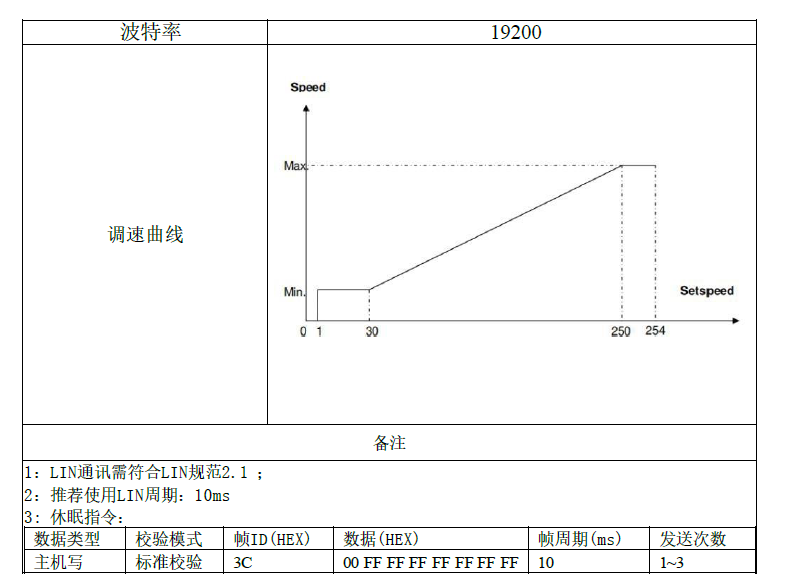
图源：引线 Excel，“lin控制协议”页原图。上图提示低速、高速平台；下方写“推荐 10ms”，与 LDF 中同帧 20ms 的安排需要确认。下方另列休眠指令，它不属于当前三个业务帧离线工具的功能范围。
5.11 PWM-IN：占空比必须按本次协议读
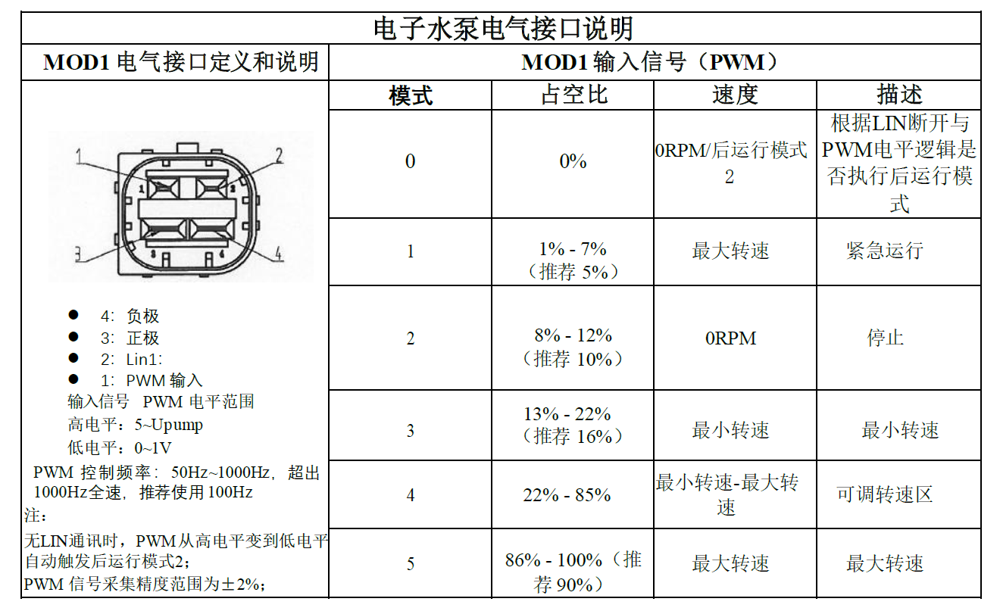
图源：引线 Excel，“PWM控制协议”页第一张原图。图左是协议中的连接器示意，与 18 条测试引线的序号属于不同编号体系。
先找四处：推荐频率 100Hz；1%～7% 为紧急最大速度；8%～12% 写停止；0% 会与后运行条件关联。
100Hz 对应周期 10ms。若占空比 10%，高电平时间为 1ms；5% 则为 0.5ms。但根据这份协议，5% 位于紧急最大速度区，10% 位于停止区。占空比小并不自动表示转得慢。
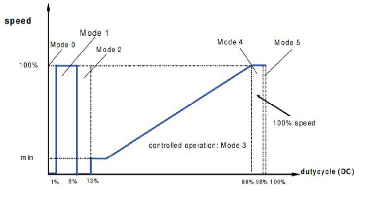
曲线与表格在部分边界表达上有差异，完整问题已经列入接入记录 。实体操作时采用双方确认的具体命令和非活动接口状态；本章只做读图与离线算术。
5.12 小练习
raw=50 按本次转速线性规则对应多少 rpm？
0x50 是十进制 50 吗？作为温度 raw 时是多少℃？
100Hz、占空比 16% 的高电平时间是多少？
同帧每 20ms 一次，每秒多少次？
接到“工具通过”的输出后，怎样进一步确认字段是否有效、是否发过硬件？
参考答案
50×22.4=1120rpm。这是线性编码结果，实际固件平台行为另查。
0x50=80；80−50=30℃。
周期 10ms，高电平 1.6ms。
1000÷20=50 次。
查看 scope、每个字段的 validity、checksum_verified，以及编码结果 sent_to_hardware。离线工具没有证明板卡收到命令。
接下来用已经准备好的软件模型，把“要求—响应—结果记录”完整看一遍。
6. 在 Typhoon 中做一次有解释的预演
上一章：LIN 与 PWM · 学习入口 · 下一章：测试准备
本章目标：把一个已经准备好的模型读懂，运行时知道它在改变什么，拿到波形后知道先看哪里。建议先看已有记录，再决定是否自己运行。
6.1 先认识这一套文件
文件类型或位置
可以怎样理解
.tse
Typhoon 原理图，描述模型里的器件和信号连接
.cpd
编译后供仿真加载的文件
.cus
HIL SCADA 的面板配置，用于交互和显示
configs 中的 JSON
告诉项目程序本次参数、事件、采样和判据
results 中的一次运行目录
保存本次模型副本、数据、报告和复核依据
编译 是把模型转换成仿真执行所需形式。加载 是把编译结果交给执行系统。启动仿真 后，模型时间才开始推进。界面出现 VIRTUAL HIL MODE 表示采用虚拟模式，还要进一步确认仿真是否实际在运行。
本章通过统一命令完成这些步骤，暂时不用自己搭建一套 SCADA 面板。GUI 基本操作可按已有建模练习 复习。
6.2 先看现有结果，认识要做的实验
打开这份已有预演报告 。它是已经留存的一次软件运行记录；完整证据入口见验证索引 。
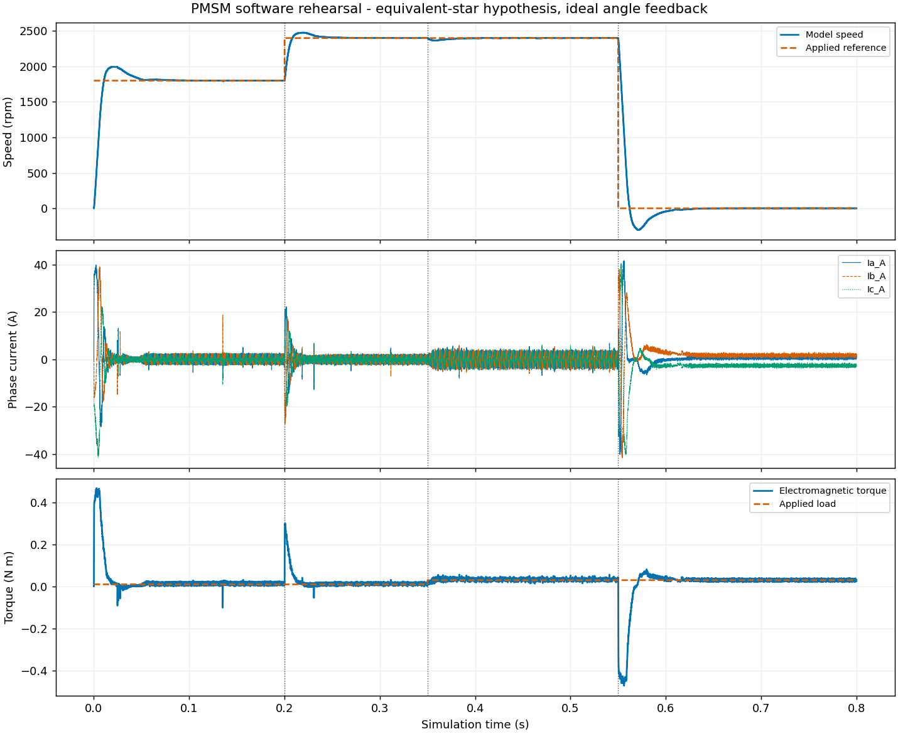
图源：上述运行记录的 waveforms.png，按字节复制。图中的横轴为仿真时间；蓝色实线与橙色虚线等图例见下文。它采用等效星形假设和理想内部角度反馈。
先按三个图层阅读：
图层
英文图例
中文含义
第一眼看什么
上图，Speed
Model speed / Applied reference
模型速度／实际施加的参考
参考何时改变，速度随后怎样响应
中图，Phase current
Ia_A / Ib_A / Ic_A
三相电流，单位 A
启动、调速、加负载、零速时的变化
下图，Torque
Electromagnetic torque / Applied load
电磁转矩／实际施加的负载
加减速与负载变化如何对应
先只描述看见的变化，再解释可能原因。例如：“0.35s 左右参考没变，负载增大，转矩和电流也改变，速度短暂变化后恢复。”这比只写“正常”包含更多信息。
6.3 运行前，把工况按时间写下来
工况 就是实验在什么条件下进行。当前配置的时间安排如下：
仿真时刻
改变什么
想观察什么
启动
参考 1800rpm，负载 0.01N·m
从静止附近进入运行，电流和速度如何建立
0.2s
参考改为 2400rpm
加速过程、超调及稳定后的误差
0.35s
负载改为 0.03N·m
参考不变时，控制器怎样应对负载变化
0.55s
参考改为 0rpm
模型控制器怎样减速及调节到零速附近
0.8s
采集结束，停止本次仿真
是否拿到了完整记录
这些要求直接施加给模型内控制器。本次运行命令没有把第 5 章的 LIN 帧发给真实板卡。
软件模型的参数和算法范围见软件准备说明 。磁链、惯量、部分电感和控制设定包含预演假设；样机事实另存。
6.4 读懂两份配置的分工
用文本查看器分别打开：
在预演配置中先找四组：parameters 是参数，events 是事件，capture 是采集，acceptance 是预先规定的评价要求。
例如惯量参数的含义在上一章已经解释过。此时你只需指出它在文件中采用哪个值、属于什么来源，而不必立刻自己选一个更合适的惯量。
6.5 检查环境与案例
先回到 PowerShell，一次执行一条命令：
Set-Location 'D:\Typhoon\lab-workflow'
.\lab.ps1 doctor
doctor 检查配套解释器、安装与模块。若这里报错，按环境说明 核对安装路径，先处理具体错误。
再执行：
.\lab.ps1 check-tle9877 --current-a 10 --json
在 result 中观察 interfaces、missing_motor_parameters、pending 与 shunt_relation。应能找到 18 条接口、部分缺失电机参数，以及 10A 对应的理想 0.005V 差分关系。
sample_model_ready=false 和 hardware_ready=false 的含义是：完整样机模型与实体接入仍待验收。这个状态可以与本次独立软件预演可运行同时存在。
继续准备本机官方模型并检查案例：
.\lab.ps1 prepare-models --json
.\lab.ps1 validate-case --case pmsm_software_preview --json
prepare-models 从本机匹配安装准备项目副本。validate-case 检查材料、配置、代码支持和已登记证据；它本身不启动一次新仿真。
6.6 自己执行一次软件预演
如果已有 Typhoon 实验或 GUI 正占用仿真运行，先保留现场，等它正常结束或由操作人停止后再做本节。一次只执行一个仿真实验。
.\lab.ps1 run-case --case pmsm_software_preview --json
它会依次准备本次副本、设置参数、编译、加载、启动、采集、停止、分析并复核。0.8s 是模型里的仿真时间，实际等待时间还包含编译、加载与软件执行，因此可能明显更久。
结束后先找到返回的 run_dir 。这是本次批次目录，后面所有文件都沿它查找。旧报告的日期和目录名不应代替本次返回路径。
如果 status 为 failed，先看哪个评价项未达标；如果为 error，先看执行阶段和 error 字段。保留原输出，按故障排查 定位问题。
6.7 找到本次报告和原始数据
批次目录里有一个 runs/01-pmsm_software_preview 子记录。你会找到：
文件
学习时先用它回答什么
report.html
本次条件和结果是什么，波形怎样变化？
waveforms.png
参考、速度、电流与转矩怎样对应？
waveforms.csv
原始每个采样点是多少？
config.json
这次实际请求采用什么条件？
capture.json
采了哪些信号，单位、采样率和时间范围是什么？
events.json
请求的改变有没有实际生效，何时被观察到？
metrics.json
用哪个窗口和公式得到什么结果？
verification.json
记录一致性和指标复算是否通过？
当前 run-case 会自动复核新结果，第一次阅读时直接查看这些文件即可。历史记录的 verify/report 会写文件，如需重建，应按历史记录处理约定 先复制完整记录和依赖，在副本上操作。
6.8 按四个问题读波形
问题一：命令真的改变了吗
先找参考与负载曲线。竖虚线标出计划事件时刻；实际改变要结合采到的命令信号和 events.json，不能只凭图上画了一根竖线判断。
问题二：对象怎样响应
0.2s 后速度有加速过程，可能先超过目标再回落，这叫超调 。随后进入较小误差范围，需要一定时间，这属于动态响应。
0.35s 后负载增大，速度可能短暂下跌，电磁转矩和电流随之调整。结合这些量，才能区分“参考变了”和“对象被扰动了”。
问题三：零速命令具体做了什么
0.55s 后当前模型采用控制器主动调节，负载命令仍在。零速附近仍可能有电流和保持转矩，减速过程也可能短暂越过零速。负速度表示模型按定义反向运动。
这个场景帮助理解当前软件控制器的行为。真实固件的停止、关断、后运行及恢复，需要另外给出状态和观测依据。
问题四：评价用的是哪段数据
本案例给每次变化留出 0.1s，再对后续规定窗口计算最大绝对转速误差。按当前工况，窗口是 0.10～0.20s、0.30～0.35s、0.45～0.55s、0.65～0.80s，实际边界和样本数看 metrics.json。
最大绝对误差 是先逐点算“实际减参考”的绝对值，再取窗口里最大的那个。它与平均误差不同；平均值小，仍可能有一瞬间偏差很大。
6.9 采样率、步长和控制周期各是什么
仿真步长 是计算模型按多小的时间推进。控制周期 是控制计算多长时间更新一次。采样间隔 是保存的相邻数据点相距多久。
它们还要与第 3 章的电频率、开关频率及第 5 章的通信周期区分。
当前预演采样率为 100kSa/s，即每秒保存约 100000 个采样点，间隔为 10μs。记录 0.8s，点数为 80000。这个采样条件能显示当前记录中的变化，是否足以评价更短的事件，还要比较事件时间尺度和所需精度。
CSV 中机械速度以 rad/s 保存；图上换成 rpm，关系为：
rpm = rad/s × 30 ÷ π
因此不能只因为 CSV 中速度数字与图上不同，就判定两者矛盾。先检查单位。
6.10 怎样理解“通过”
本次软件判据维护在案例验收说明 。这里重点认识两个字段：
字段
判断的问题
experiment_status
当前工况的数据是否满足事先规定的判据？
record_status
文件及其关联是否一致，指标能否按规定方法复算？
转速误差满足 50rpm 是当前软件预演的检查要求；三相电流和检查用于电路一致性。这些要求的适用范围写在案例内，真实样机的性能与保护判据要按测试需求另外确定。
6.11 完成一次学习记录
先按原配置完整做一轮，写下：
本次 run_dir，以及报告和原始 CSV 的位置。
三个事件各改变了什么，实际生效证据在哪。
加负载之后，参考、电流、转矩和速度怎样变化。
四个窗口的评价结果，以及两个状态字段的含义。
当前哪些条件采用预演假设，哪些问题要等样机接入验证。
进阶练习可以把“如果负载变化更大，会发生什么”写成预测。要做对照时，先另存配置，明确只改变哪一个因素、固定什么和怎样判断，再检查支持范围。第一轮无需改参数。
6.12 小练习
100000Sa/s 的采样间隔是多少？0.8s 有多少点？
0.35s 增加负载，0.1s 后开始评价，对应从哪个时刻起？
窗口平均误差为零，能否保证最大绝对误差小？
模型里的零速命令，与真实板卡的功率输出已关断，是否是同一个判断？
参考答案
10μs；80000 点。
0.45s。
不能。正负误差可能相互抵消，需要逐点算绝对值并取最大值。
两者需要不同观测。零速是速度要求；关断还要看驱动、功率级状态和实际电流等证据。
下一章把学到的内容整理成可以用于联调的准备成果。
7. 把学习变成样机测试准备
上一章：Typhoon 预演 · 学习入口 · 下一章：TI 真实控制器实训
本章目标：学完概念后，能拿出具体笔记、接口问题和测试记录，并参与联调沟通。这里按你当前的知识起点安排任务，实物步骤由实际设备与负责人落实。
7.1 先把“准备好了”说具体
样机测试准备可以逐层完成：
层次
完成后你能拿出什么
理解系统
一张闭环图，指出命令、控制器、驱动、对象和反馈
理解资料
一份术语对照，能找到每个重要参数和引线的来源
软件练习
手算和工具一致的 LIN 样例，一次有解释的预演阅读记录
接入准备
每条真实路径的节点、方向、参考、量程与时序问题
实体验证
负责人确认的接线与步骤，以及实际操作产生的波形和日志
前四层可以先推进。遇到具体接口未知，写清是什么未知，同时继续不依赖它的学习和离线工作。
7.2 学习任务一：自己画两张闭环图
第一张画当前软件预演：模型内控制器 → 模型逆变器与电机 → 模型反馈 → 模型内控制器。
第二张画拟接入系统：外部命令 → 真实板卡 → 驱动调理与捕获 → 实时对象模型 → 反馈输出与调理 → 真实板卡。
用框线圈出真实硬件，给每个跨框箭头写一个具体量。例如“六路驱动的开关状态”“按采样比例表示的电流反馈”，不要只写“数据”。
完成后能解释：两张图中，谁在执行控制算法？角度从哪里来？哪些线需要真实电气规格？
7.3 学习任务二：给 18 条引线做读表笔记
按接入记录 逐项阅读，先复述用途，再把未知写成可回答的问题。可以在自己的笔记中使用下面格式：
标签
我理解的用途
已有依据
下一项需要明确的信息
GH1
U 相上桥栅极引出，供调理后捕获驱动
引线表的 M4 G 脚
引出端是否已分压；相对哪个点测量；接入哪个调理通道
SHP/SHN
差分电流测量路径
引线表 0.5mΩ 与焊接位置
与 OP1/OP2 对应；注入在滤波前还是后；允许共模与采样窗口
LIN-IN
LIN 总线接口
LDF 和引线表
主节点设备、SDK、实际调度与停止流程
这张表用于你的学习，不必复制一套参数事实到多个地方。新的正式答复应更新样机配置 及所属接入记录。
7.4 学习任务三：建立四列转速记录
以后看日志时，用四列避免把不同环节混为一谈：
量
从哪里来
它回答什么
请求转速
人或测试脚本输入
原本想要什么
编码转速
根据 raw 与 LDF 换算
报文实际能表达什么
板卡反馈转速
LIN 状态或其他固件接口
板卡报告自己估计或测得多少
模型转速
HIL 对象模型
仿真对象当前算出多少
固件反馈的目标字段 Setspeed 还可以作为独立一列，用来核对限幅和状态机行为。各列都保留原始值、单位、有效性、时间戳和来源。
这些记录现可用现场数据工具 从多通道 CSV 和 LIN 原始日志整理。先按采集交接说明 准备来源和时间依据，再将确定的判据填入清单。没有同步依据的数据分别出图；软件预演和 Mock 数据保留其来源性质。
例如请求 2250rpm，编码为 2240rpm，首先是量化产生的差异。若板卡反馈另一个目标值，再检查固件平台或限制；若模型速度与目标偏离，再结合实际驱动和反馈看控制过程。
7.5 学习任务四：读一组证据，写三句话
先读第 6 章的现有预演报告，尝试写：
条件 ：“在本次软件参数、内部角度反馈和指定负载下，执行了哪些事件。”观察 ：“在哪个时刻，哪几个信号发生了怎样的变化，指标是多少。”含义 ：“按哪个窗口与判据得到什么结论；接入样机还需要哪些条件。”
“图看起来很好”“AI 判断正常”都没有说明测量和判定依据。Agent 可以帮助整理问题和分析数据，实际闭环的时序由仿真器与控制板承担，报告结论仍要落到具体记录上。
7.6 与板卡方、平台方沟通时，问题怎样变具体
把每个问题写成“目前知道什么 → 还差什么 → 需要哪种交付”。以下用于准备沟通材料，不会自动发送给任何人。
主题
具体问题示例
希望取得的材料
版本与流程
本次实物的芯片、板号、固件版本是什么？在 9V 条件下怎样唤醒、运行、停止和恢复？
版本记录与逐步操作说明
功率级边界
哪些 MOS 和采样电路保留？U/V/W、VM、SL 分别怎样连接？
标明保留、断开、替代部分的实际改装图
栅极捕获
“18V/2=9V”的除以 2 在哪里实现？各路参考、共模和边沿条件是什么？
调理原理、通道映射和输入输出规格
电流采样
SHP/SHN 对应哪个芯片输入？增益、偏置、滤波和采样窗口怎样设置？
电路映射与当前固件采样配置
无感控制
当前算法需要哪些电流、电压或诊断信息？启动与切换需要什么条件？
算法接口与状态说明
电机模型
5mΩ、11μH 是什么定义？Ld/Lq、磁链、惯量和负载怎样取得？
带定义、单位和来源的参数表
通信与停止
采用哪张调度表？PWM 与 LIN 谁优先？命令超时和后运行如何结束？
已验证样帧、调度与状态转换说明
拿到答复后，检查它是否针对这块实物及这份固件，是否明确单位和参考点。通用芯片功能图适合解释原理，实际接口参数需要相应版本证据。
7.7 到实体联调时，怎样理解推进顺序
以下是理解各阶段目的的路线，具体电压、命令、接线与操作步骤需由实际设备方案确定。
阶段
先解决的问题
典型证据
确认对象与边界
这是什么板、什么固件、哪些电路参与测试？
版本、实物对应、改装图、通道表
在确认条件下建立通信
帧头、响应和解码是否对应？
原始 ID/PID、数据、校验、设备时间戳
检查驱动与反馈路径
方向、倍率、参考点、有效时刻是否正确？
已知状态或数值对应的捕获与测量
建立一个正常闭环
设定后是否有实际驱动、对象响应和一致反馈？
同步关联的命令、驱动、反馈和模型波形
验证停止及恢复
结束条件和状态机是否达到预期？
驱动状态、电流、速度、状态与恢复过程
扩展已定义工况
在明确扰动下，响应是否符合固定要求？
扰动生效、响应窗口、指标与判定依据
前面没有对应证据时，先定位缺口。正常闭环和停止过程建立后，再选择一个目标明确的异常用例。
7.8 “不转”时，按信号链逐段看
要求是否成立 ：原始命令是什么？编码是否有效？当前接口和状态允许运行吗？板卡怎样回应 ：有没有响应帧？反馈目标、故障或状态是什么？实际固件版本是否匹配？有没有实际驱动 ：六路信号是否出现？捕获是否经过正确调理？相序和极性是否对应？对象是否收到驱动 ：模型输入是否变化？母线、开关与电机参数是否按本次条件生效？反馈怎样返回 ：电流对应什么数值和时刻？是否还有相电压或诊断路径需要满足？启动卡在哪个状态 ：是准备、开环升速、估计切换、保护还是后运行？需要固件侧什么观测？
这些是逐项核查的候选位置，最后结论必须由本次证据支持。仅看到“LIN 正常”只能说明通信的一部分已经工作。
7.9 一页学习记录模板
复制下面内容到自己的笔记。保留“未知”是有用的，它告诉你下一步查什么。
学习主题／日期：
今天要回答的一个问题：
使用的文件及位置：
我画的系统或信号链：
资料明确给出的内容：
我为理解而采用的假设：
还需要确认的内容：
计算例子或实际命令：
预期看到什么：
实际看到什么：
结果文件或截图位置：
我能据此说明什么：
下一步只推进的一件事：
7.10 最后做一次自检
能不用照抄教程，回答下面八题，就具备继续跟进样机准备的基础了。
芯片、功率 MOS 和电机分别承担什么？
六路 GH/GL 与外部 PWM-IN 有什么关系和区别？
0.5mΩ 分流电阻下，10A 为什么对应 5mV？
为什么注入节点、参考点和采样时刻要一起确认？
raw=100、0x64、2240rpm 怎样联系起来？
为什么控制和状态各占 10ms 时隙，同一帧却每 20ms 重复？
当前预演的控制器在哪里？为什么还要验证样机无感启动？
一份报告需要哪些信息，才能从“看见变化”走到“满足要求”？
核对要点
芯片执行程序并提供采样、通信、驱动等功能；功率 MOS 控制能量通路；电机产生机械作用。
外部 PWM-IN 表达命令，六路 GH/GL 控制三相功率开关；各自的电气条件和协议不同。
按 V=I×R，10×0.0005=0.005V。
同一物理量在不同节点可能有不同幅值、偏置和时间；ADC 必须在正确条件下取得对应信息。
十进制 100 等于十六进制 64，再乘 22.4rpm/code 得到 2240rpm。
一次循环包含两个连续时隙，总长 20ms。
在模型内部，采用内部角度与预演参数；实际固件的估计、反馈与时序仍需实体验证。
条件和来源、实际事件与原始数据、单位和同步、计算窗口与公式、预设阈值，以及记录复核和适用范围。
对某一题仍不确定，就沿术语和资料索引 回到对应章节。你可以把尚未理解的一小段原图、字段或波形位置记录下来，再逐项补齐。
继续读第 8 章：TI LaunchPad 中文实训 ，把这里画出的闭环对应到一个真实控制器案例；再用第 9 章 整理 TLE9877 实体接入路线。
8. 中文实训：真实 TI 控制器怎样控制虚拟 PMSM
上一章：样机测试准备 · 学习入口 · 下一章：从 PMSM 软件预演到 TLE9877 实体 C-HIL
本章写给已经做过 Typhoon 图形界面预演 、准备接触真实控制板的组员。目标是读懂一个完整的外部控制器案例，能在模型中找到驱动入口、反馈出口和测试判据，再把这些位置对应到自己的项目。
本章依据 Typhoon 官方 PMSM torque control using TI LaunchPad 应用说明 ，结合本机 THCC 2026.3 的模型、面板和测试脚本编写，是按学习任务组织的中文教学改编。图中的真实控制器是 TI LAUNCHXL-F28379D ；第 9 章再讨论 TLE9877。
8.1 先抓住这件事：控制算法搬到了真实芯片上
在之前的软件预演中，模型里的控制器算出 PWM，模型里的逆变器和电机作出响应。在本案例中，执行 FOC 和 PWM 调制的是 TI 微控制器，HIL 实时仿真逆变器、电机及相关电路。真实控制器和虚拟对象通过电气信号交换信息，构成控制器硬件在环，即 C-HIL 。官方案例
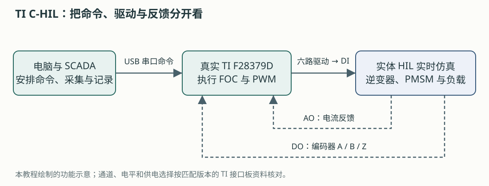
图为本教程绘制的功能示意。顺着它区分三条路径：
路径
谁发给谁
承担什么任务
命令
电脑 → TI 控制器，USB 串口
设置使能和转矩要求
驱动
TI 控制器 → HIL 数字输入 DI
告诉模型的六个功率开关何时开、何时关
反馈
HIL → TI 控制器，AO 和 DO
用模拟电压表示电流，用数字脉冲表示编码器信号
电脑负责安排实验和观察；快速闭环沿“TI → HIL → TI”运行。PC 串口的每次更新只改变要求，实时对象仍持续响应控制器输出的开关动作。
这里的电机和主功率电路由仿真器计算。模型中出现 400 V 电机，并不意味着要把 400 V 功率接到 LaunchPad；真实接口传递的是经过适配的信号。
8.2 为什么案例叫“转矩控制”，而原来的练习是调速？
之前的 GUI 练习修改 w_ref，要求模型维持某个转速。本案例修改 T ref，直接提出电磁转矩要求。其 FOC 设定 d 轴电流参考为 0，通过 q 轴电流调节转矩。官方案例
可以把它理解为：调速是在问“保持多快”，转矩控制是在问“用多大的劲”。电机最后转多快，还受负载和惯量影响。
用机械平衡理解这个区别：
惯量 × 转速变化率 = 电磁转矩 − 负载转矩 − 摩擦转矩
当驱动力矩大于阻力矩，速度上升；二者平衡时，速度可能稳定。因而，判断这个案例先看转矩是否跟随 T ref，再看电流控制和速度响应。不能把原来软件预演的“转速误差小于 50 rpm”直接当作它的判据。
官方示例采用 T_load = 0.001 × ω_mech² 的负载关系，其中机械角速度按 rad/s、负载转矩按 N·m 表示，系数属于该示例。它使负载随转速增大；本次水泵的负载模型还需取得自己的依据。官方负载定义
动手题： 假如转矩已经跟随要求，而速度仍在增加，能否立刻判为控制失败？
核对思路
先看测试要求、负载和观察窗口。转矩跟随与恒速是不同的目标；速度仍增加可能来自尚未建立的机械平衡。还需核对电流、限幅和模型条件，才能判断是否异常。
8.3 拿到哪些文件，就能开始学习？
在 Control Center 的 Example Explorer 中搜索 ti pmsm torque control 或 PMSM torque。本机安装位置为：
D:\Typhoon\Typhoon HIL Control Center 2026.3\
examples\models\hardware in the loop\ti pmsm torque control\
ti pmsm torque control.tse 电路与对象模型
ti pmsm torque control.cus SCADA 面板
ti pmsm torque control.out TI 控制器固件映像
f28379d.ccxml TI 烧录目标配置
generated.ufsettings TI 烧录设置
5SNG 0150Q170300_*.xml 功率器件损耗资料
examples\tests\119_ti_pmsm_torque_control\
test_ti_pmsm_torque_control.py 自动化测试脚本
先认识两个“程序”去哪里：.tse 编译后加载到 HIL；.out 用 UniFlash 烧录到 TI 控制器。它们服务于不同的硬件，不能互换。
学习时可以直接打开官方模型阅读。需要改动时，将整个模型目录 复制到项目自己的学习目录，保留配套文件，再修改副本。测试脚本按相对目录查找模型；复制测试时需保留相同层级，或在副本中明确改好路径。
手头条件
现在可以完成的任务
只有电脑和 THCC
阅读原理图、组件属性、SCADA 配置与测试代码，填写信号表
有实体 HIL，缺 TI 控制器或接口板
确认模型与设备配置，准备通道；完整 TI 闭环仍缺外部控制器
TI 控制器、适配接口和实体 HIL 都齐备
按对应版本接线、固件与实验方案进行实体复现
官方在线要求表列出的最低配置是 1 台 HIL101、Pro 1 ；本机模型也保存为 HIL101、1 μs 电气步长。具体设备的编译配置和资源占用要重新核对。汉象方案中的 HIL404 是另一项设备选择依据，不能由这个示例推定其实际接入已经就绪。官方案例要求表
8.4 电脑练习一：沿原理图找出“被仿真的对象”
本节只阅读模型，不需要连接板卡或启动仿真。
在 Example Explorer 打开模型，在 Schematic Editor 中缩放到能看清主电路。
沿电能路径找到交流电源、三相整流器、直流母线、三相逆变器和 PMSM。
找到负载计算、电流测量、编码器输出及 Output Settings。
对照下面的表，给每个部分写一句用途。
模型部分
阅读时要理解的作用
迁移到水泵时先问什么
交流电源与整流器
给示例建立直流母线
水泵的直流供电应怎样建模？
母线与制动支路
表示储能与发电时的能量处理
实板保留哪些供电、功率与诊断电路？
三相逆变器
把六路开关动作变为三相电压
开关动作来自哪个真实节点？
PMSM 与负载
计算电流、转矩、速度及机械响应
参数定义和负载规律是否对应本次电机？
电流／位置输出
为真实控制器提供运行信息
本固件实际需要哪些反馈？
损耗与热模型
演示如何扩展观察对象
首轮闭环是否需要这部分复杂度？
官方示例的 PMSM 为 19.8 kW、400 V、8 极，编码器为 4096 脉冲／转；这些都是 TI 案例条件。迁移时保留“驱动输入—对象计算—反馈输出”的结构，再重新选择水泵的电路、参数和反馈。官方模型说明
本节产出： 一张圈出主电路、驱动入口和反馈出口的模型截图，以及一份五行以内的对象说明。
8.5 电脑练习二：找到真实 PWM 进入模型的位置
双击 Three Phase Inverter，查看 Control。本案例使用 Digital input per switch ，即每个功率开关分别接收一个数字输入。这个设置让外部控制器的六路信号直接决定模型开关状态。三相逆变器组件说明
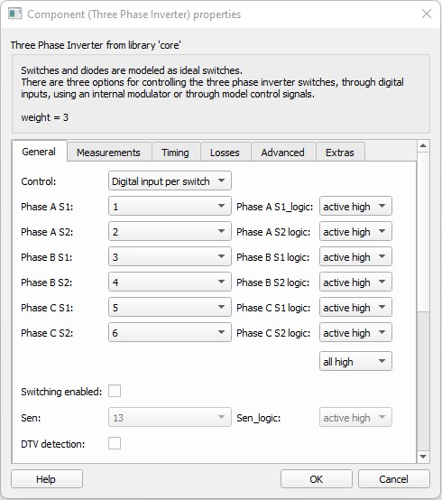
图源：Typhoon 官方案例 Figure 2，本机安装帮助的原图字节副本。图中 DI1～DI6 和 active high 属于这个 TI 案例。
图中的项目
中文含义
检查动作
Phase A/B/C S1A/B/C 相上桥开关
查每一路对应哪个 DI
Phase A/B/C S2A/B/C 相下桥开关
查每一路对应哪个 DI
active high/low调理后的高／低电平表示开通
对照接口是否反相
Digital input per switch六个开关各有独立输入
逐路核对开关状态与通道
再比较三个容易混淆的选项：
Internal modulator： 模型内部产生 PWM，用于相应的软件控制结构。Digital input per switch： 捕获每个外部开关信号，保留实际六路时序。Digital input per leg： 每桥臂一个输入，由模型内部死区模块生成两路开关动作。
这些模式观察到的控制行为不同。若目标是验证真实六路输出及其死区，不应为了少接线就改成每桥臂一个输入。控制模式定义
本节产出： 在笔记中填完 控制器信号 → 接口板 → HIL DI → 模型开关 → 有效极性 六行表。TLE9877 的通道号留待其自己的 I/O 合同确认。
8.6 电脑练习三：找到电流和编码器怎样返回 TI
打开模型中的 Output Settings，它使用 Initial Settings 组件集中配置输出。先读 Signal 和 Channel，再读比例、偏置与限幅。Initial Settings 说明
本机 THCC 2026.3 示例保存的输出关系是：
输出
模型信号
真实控制器得到什么
AO1、AO2、AO3
Ia、Ib、Ic 对应的电流测量信号
用电压编码的三相电流信息
DO17、DO18、DO19
编码器 A、B、Z
位置／速度计算所需的脉冲
其中三路 AO 保存了 1.5 V 偏置及 0～3 V 限幅。它们表达的是该 TI 固件约定的采样接口；本板 SHP/SHN 的毫伏级差分接口另行设计。
编码器通过适配板连接到 TI 的 eQEP 接口。官方应用说明要求：接口板 1.2 及更新版本 按 eQEP1 与 QEP_A 的对应方式接线；1.1 及更早版本按专门 FAQ 处理。实际插针方向和引脚对应应对照相同版本图纸。接口板说明 、旧版本 FAQ
用一组自己能算清的数理解输出比例
下面是独立教学算例 ，用于理解转换关系：假设希望把 −20～+20 A 表示为 0.5～2.5 V，且中间接口单位增益、无额外偏置，则：
目标关系：V_AO = 0.05 × I_model + 1.5
−20 A → 0.5 V
0 A → 1.5 V
+20 A → 2.5 V
写成这个关系后，再确定软件输入框采用的单位。如果填的是乘法增益，数值是 0.05 V/A；若采用“每伏代表多少安培”的比例，数值是其倒数 20 A/V。这组数不作为 TI 或 TLE9877 的接线设定。
为什么这里要先写转换关系，再填写 Scaling？
官方信号缩放应用说明使用“物理量跨度／输出电压跨度”的比例；Initial Settings 和 Analog Outputs 帮助则用乘法因子描述缩放。本机 TI 示例的 Initial Settings 还保存了旧格式标记 model_load_legacy=1。因此，不能仅凭都叫 Scaling 就把一个资料中的数字填入另一个界面。
实际配置时对照所用版本帮助及回读值，先在与板卡隔离的测试条件下核对零点和正、负测试点，再检查动态范围与限幅。接入控制器前还要把中间调理电路的增益、偏置和极性计入整条链路。缩放应用说明 、AO 设置定义
本节产出： 一张输出表，写明物理量、输出通道、目标转换关系、接口增益／偏置、允许范围，以及需要什么测量来核对。
8.7 有齐套硬件时：一次 TI 案例复现怎样安排？
本节供实验负责人组织 TI 台架复现。只有电脑时，完成前面的阅读练习即可；Virtual HIL 的内部 I/O 回环不会连接真实 LaunchPad。Virtual HIL 回环说明
开始前，先把对象和资源对上
记录 HIL 型号、设备标识与配置，LaunchPad 型号、接口板版本、THCC 版本和固件来源。使用匹配的接口板文档核对供电选择、编码器排线与数字／模拟通道。接口板可以采用不同供电方式，USB 与 HIL 供电选择应按板级文档落实。接口板供电说明
按阶段操作，并留下对应证据
阶段
操作
应取得的证据
1. 准备 TI 固件
核对 .out 和目标配置，用 UniFlash 烧录到匹配的 TI 控制器并运行代码
目标型号、文件摘要、烧录成功记录
2. 核对 HIL 模型
在学习副本中确认设备配置、六路 DI、AO/DO 映射和依赖文件；编译并加载到所选实体 HIL
编译结果、设备标识、模型与输出配置
3. 建立命令连接
打开配套 .cus，在设备管理器确认串口，选择 COM 后点击 Connect
实际串口和连接状态
4. 进入初始状态
按台架方案设置初始转矩、使能状态和采集窗口；开始实时仿真
初始条件、HIL 运行状态、输出检查
5. 改变要求
在已确认的范围内将 Inverter Mode 置 Enable，改变 T ref
命令记录、六路驱动、对象响应
6. 捕获与退出
捕获暂态；按台架停机流程退出使能并确认状态，再停止仿真和释放串口
原始波形、停止及资源释放记录
UniFlash 的基本流程是识别／选择目标、载入匹配配置、选择 .out 并执行烧录。串口应从 Windows 设备管理器中的 TI 设备核对，截图里的 COM4 只是演示值。官方烧录与串口教程
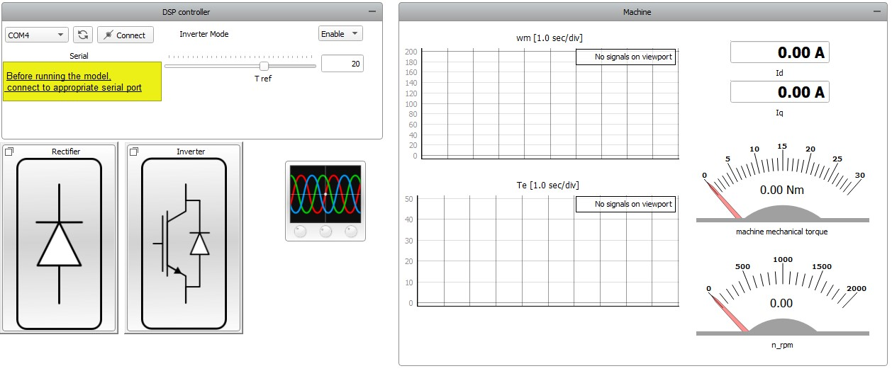
图源：Typhoon 官方案例 Figure 3，本机安装帮助原图。先看左上角 COM、Connect、Inverter Mode 和 T ref，再看右侧转矩、速度及 Id/Iq。截图中的滑块值和仪表状态是官方界面示意。
零转矩命令、退出使能、停止 HIL 和断开串口是不同动作。退出时应按匹配固件与台架流程确认实际状态；HIL 停止后的 AO/DO 状态也要单独核对。本机示例配置包含停仿真时将 AO 复位到偏置值的设置，不能把“停止”一概理解为全部端口输出 0 V。
8.8 看哪些波形，才能说清控制效果？
先按问题选信号，再设置 Capture/Scope。具体可选名称以当前模型的信号列表为准。
想回答的问题
需要一起看什么
阅读顺序
转矩是否跟随？
T ref 的实际发送记录、电磁转矩看命令时刻，再看暂态与稳态窗口
电流控制是否符合设计？
Id、Iq、对应参考及三相电流
看目标关系、偏差、饱和或异常尖峰
速度为何改变？
机械速度、转矩、负载
联系加减速过程和机械平衡
模型是否收到真实驱动？
控制器输出、调理后信号、模型开关状态
从真实引脚逐段追到模型
反馈是否送对？
模型电流、AO 实测值、控制器采样
对照比例、偏置、极性和时序
本机测试脚本实际捕获的信号包括 3 ph PMSM VBR.electrical torque 和 3 ph PMSM VBR.i_ds。这些是模型内部可观察量；如果需要评价 MCU 自己算出的 Id/Iq，还要取得固件侧观测，记录其来源。
整流器和逆变器子面板展示损耗与温度计算。它们可用于学习模型扩展；计算值的适用性取决于所用器件数据和热参数，实板温度需要对应测量。
8.9 阅读官方自动化脚本：把“看起来正常”变成判据
在 Example Explorer 中用 Open Test 打开脚本，先阅读，不启动测试 。本机 THCC 2026.3 脚本的关键条件如下：
项目
代码中的条件
学习重点
转矩调节测试点
8、12 N·m
每个点分别运行并评价
转矩允许区间
参考值 ±1.5 N·m
允许带必须来自明确要求
d 轴电流允许区间
−0.8～+0.8 A
“零电流目标”不等于数值必须逐点等于 0
采集
3 s、1 MSa/s
采集范围与评价范围分别设置
评价窗口
ranges.after(1)评价采集时间轴上 1 s 后的区段
断言严格度
strictness=0.9与当前测试库定义一起阅读，不能解释成所有点都在范围内
热响应演示点
5、15 N·m
绘图与性能断言分别查看
以上数值来自本机 examples/tests/119_ti_pmsm_torque_control/test_ti_pmsm_torque_control.py 的静态阅读，仅用于解释 TI 案例。
阅读代码时按这个顺序找：连接资源 → 编译／加载 → 下发使能与参考 → 采集 → 选择窗口 → 执行断言 → 保存报告 → 清理资源。这套顺序可以迁移到水泵测试，具体命令、数值和数据来源则重新定义。
脚本默认 auto_flashing = 'yes'，可能通过 UniFlash 改写 TI 控制器固件；它还会连接设备、操作串口并启动 HIL。若台架采用已确认的现有固件，应先在测试副本中按计划设置 auto_flashing = 'no'，同时核对模型路径和设备选择。Open Test 用来读代码，Run 才执行这些动作。官方自动化说明
8.10 遇到问题，怎样逐段定位？
下面是检查顺序。每一项都需要本次记录支持，再形成结论。
现象
下一项检查
有用的证据
找不到示例
本机安装版本、Example Explorer 搜索词、安装文件
实际文件路径与版本
模型编译失败
目标设备与配置、依赖文件和具体错误
完整错误信息及失败组件
COM 无法连接
设备管理器端口、驱动、其他程序占用
设备枚举、连接日志
使能后没有驱动
固件是否运行、命令是否正确、接口路由
命令与控制器输出捕获
有驱动但对象不响应
DI 映射、极性、母线与模型开关状态
调理后输入及模型侧波形
电流／转矩明显异常
相序、反馈比例、偏置、编码器方向与初始化
模型量、端口测量、固件状态
GUI 有响应而自动测试失败
固件、命令、采集窗口与判据是否一致
原始波形及具体失败断言
8.11 学完后，交出一页 TI 案例读图记录
案例／THCC 版本：
模型、面板、测试脚本位置：
控制算法运行在哪个芯片：
要求控制的是转矩还是转速：
六路驱动：控制器端 → 接口 → HIL DI → 模型开关／极性
电流反馈：模型量 → AO → 接口 → 控制器采样
位置反馈：模型编码器 → DO → eQEP
PC 命令：端口、协议、使能和参考
软件阅读中已经找到的依据：
还缺哪些实体设备与版本资料：
若实际运行，要采什么、按什么窗口和阈值判断：
停止、恢复和输出复位需要核对什么：
完成后，应该能回答：真实芯片控制的虽然是虚拟电机，但驱动、采样、控制程序和实时交互都能成为被测试的对象。 下一章把这个结构落到本次水泵板卡。
8.12 按问题查官方资料
本机安装帮助中的对应页面位于 typhoon/help/t-an001/References/ti_pmsm_torque_control.html 等目录，可离线对照。官方页面可能随版本更新；复现实验时保留实际使用版本和文件摘要。
9. 从 PMSM 软件预演到 TLE9877 实体 C-HIL 测试
上一章：TI LaunchPad 中文实训 · 学习入口 · 现场联调操作与记录
本章面向准备参与样机联调的组员。目标是把已有软件预演、TI 官方案例和本次板卡资料接成一条可执行的准备路线：知道模型要改哪里、接口要确认什么、首个实体用例怎样留下证据。
本次要建立的闭环：LIN／已确认命令源 → 真实板卡与固件 → 六路驱动的调理与捕获 → HIL 逆变器及 PMSM → 固件所需的电气反馈 → 真实板卡。
案例名称沿用 TLE9877，实物完整型号、板号和固件以确认记录为准。板级事实集中查样机接入记录 ，实际接线填写 I/O 合同 。
9.1 三个系统放在一起，变化发生在哪里？
对比项
现有 PMSM 软件预演／GUI 练习
官方 TI C-HIL
本次 TLE9877 实体 C-HIL 目标
控制算法
Typhoon 模型内部控制器
TI F28379D 固件
实际交付板卡上的固件
被控对象
模型逆变器、电机、负载
HIL 实时电气与机械模型
按功率级边界建立的实时模型
上位机命令
直接修改模型参考
串口发送转矩与使能
LIN／确认后的 PWM-IN 等命令
功率开关输入
内部控制器产生
TI 输出经接口送 DI
GH/GL 引出信号经专用调理送 DI
电流反馈
模型内部理想反馈
模型相电流经 AO 返回
对应实际采样链和窗口的反馈注入
位置／速度
理想模型角度
编码器 A/B/Z 返回 TI
无感固件按其实际输入估计；模型量用于独立观察
运行平台
电脑 Virtual HIL
实体 HIL
实体 HIL 与匹配接口
本项目已有入口
GUI 教程、pmsm_software_preview
官方安装示例
接入资料、工作表和 smoke 计划
TI 案例适合学习“外部控制器怎样接入”，而水泵的命令、反馈与功率级要按本板重新设计。特别是无感控制，不能把模型的理想角度直接送给算法后，就据此评价其估计与启动能力。
Virtual HIL 的 I/O 回环在软件内部传递信号。它可以帮助理解输入／输出配置；实体控制板需要真实的接口和实时仿真硬件。官方回环说明
9.2 第一步：保留软件预演，把它作为对照
先复习 GUI 练习 或软件预演导读 ，确认自己能找到控制器、逆变器、电机、负载和观察量。
然后查 pmsm_software_preview.json 的 assumptions。现有练习采用等效星形口径、理想模型角度及明确列出的控制和电机参数假设；这些设定支持软件学习，实际电机参数另填实体参数表。
准备三个独立的材料位置：
后续新建实体模型副本，保留这些材料的对应关系。这样发现差异时，可以区分是控制器改变、参数改变，还是接口改变。
本步完成标志： 能指出软件预演中哪些参数已有资料，哪些是学习假设，哪些实体模型必需项仍为空白。
9.3 第二步：先画功率级边界，再画接线
一个 C-HIL 模型要替代实物系统的哪一部分，决定了接口需要传递什么。把实际改装图上的器件标成三类：保留、断开、由模型替代 。
本次六路 GH/GL 引线取自 MOSFET 栅极；U/V/W、VM、SL 和 SHP/SHN 也都有实际电路位置。应沿原理图确认它们与驱动诊断、电流采样和参考电位的关系。本板引线记录
要确定的边界
需要拿到的具体答复
真实功率 MOS
是否保留、怎样处理能量通路、会影响哪些驱动诊断
三相节点 U/V/W
哪些由真实电路决定，哪些需要模型反馈，接在哪个节点
VM／SL
功能、参考点、保留电路和允许范围
栅极取出
取的是 G 对哪个参考的电压，调理前后怎样表示开关状态
电流反馈
注入在 SHP/SHN、放大器后或其他确认节点，原采样路径怎样处理
停止与恢复
固件状态、输出状态、电源与通信如何配合
这里尤其要区分：HIL 数字输入接收开关信号；普通 AO/DI 接口承担信号交互。 如果真实功率级仍参与能量交换，需要平台方明确相应接口和设备。不能只根据“电机用模型替代”推导出 U/V/W 的接法。硬件接口指南
本步完成标志： 一张标注实板版本、保留／断开部分、反馈注入点和参考电位的改装接线图。
9.4 第三步：让真实六路驱动接管模型逆变器
迁移时，按以下顺序修改自己的实体模型副本：
保留所需的直流供电、三相桥、PMSM 与机械负载结构，参数按本次边界重新配置。
停用或移除模型内部控制器对该逆变器的驱动，明确唯一的控制来源。
将逆变器控制方式设为 Digital input per switch。
按已确认接线，为六个模型开关分别分配 HIL DI，填写各路调理后的有效极性。
保留开关状态、电流、电压、转矩和速度的观察位置，供后续逐段核对。
Digital input per switch 的含义与属性以逆变器组件说明 为准。下面只列功能对应，实际 DI 号由合同填写：
本板引线
已给出的取出位置
经调理后拟对应的模型开关
仍要填写
GH1／GL1
U 相上／下 MOS 的 G 脚
Phase A S1／S2
DI、极性、参考点、延迟
GH2／GL2
V 相上／下 MOS 的 G 脚
Phase B S1／S2
同上
GH3／GL3
W 相上／下 MOS 的 G 脚
Phase C S1／S2
同上
这里将 U/V/W 暂对应模型 A/B/C 以说明关系，最终相序和方向一起确认。TI 示例的 DI1～DI6 只属于其自身通道配置。
上桥栅极与对应源极之间的驱动电压，和相对于系统地的电位，是两个不同问题。引线材料写的“18V/2=9V”还缺实际分压位置、共模与参考说明；按这些信息选择差分／隔离等调理，再核对 HIL 输入规格。本板驱动接口待确认项
本步完成标志： 六路通道表完整，并能用实测或平台已验证记录说明每路输入如何对应模型开关。
9.5 第四步：把“三相电流反馈”改成固件真正需要的采样链
TI 案例通过三路 AO 提供相电流。本板资料给出单分流采样电阻 0.5 mΩ ，并引出 SHP/SHN；反馈模型需要表示对应分流支路在正确时刻的电流，再按实际采样电路生成输入。
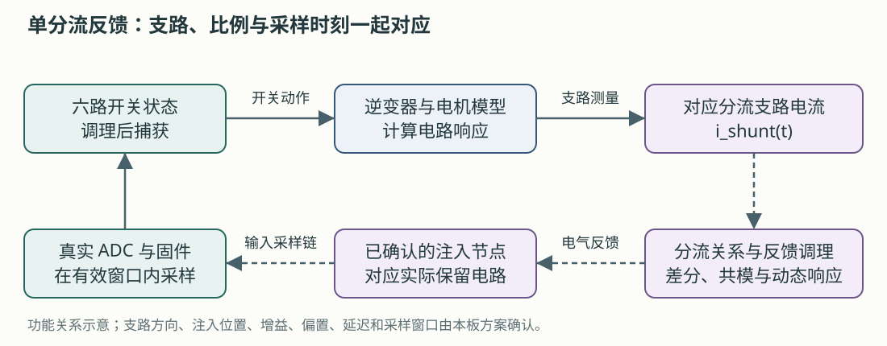
图为本教程绘制的设计关系。具体分流支路、极性、滤波、共模与注入位置按改装图和固件配置落实。
为什么不能把三相电流平均后送回去？
用一个理想三线制三相桥算例理解：定义 i_u、i_v、i_w 为由桥流向电机的线电流，S_u、S_v、S_w 为三个上桥的理想开关状态，直流侧电流满足：
i_u + i_v + i_w = 0
i_dc = S_u × i_u + S_v × i_v + S_w × i_w
理想开关状态 (S_u,S_v,S_w)
由式子得到的 i_dc
(1,0,0)
i_u
(1,1,0)
i_u + i_v = −i_w
(0,1,0)
i_v
(0,0,0) 或 (1,1,1)
0
这是教学推导，假定理想互补开关、忽略死区和器件换流。它说明：同一分流测量在不同开关状态下代表不同相电流信息。 实体模型应优先在对应电路支路测量，并核对方向；真实采样还受二极管续流、死区、消隐、滤波和最小有效窗口影响。
Infineon 的 TLE987x 无感 FOC 应用说明给出一种单 PWM 周期内两次分流采样并重构相电流的实现，可重点读第 2.4 节和第 4.1 节。其演示平台是 TLE9879 EvalKit；本次实际固件是否采用相同算法与采样时刻，需要固件侧说明。Infineon 单分流与无感 FOC 应用说明
数值正确，还要保证反馈在采样时已经稳定
以分流电流 10 A 为教学例子：
理想分流差分电压 = 10 A × 0.0005 Ω = 0.005 V = 5 mV
5 mV 表示分流两端的差值。若注入在放大器之后，还需计入增益和偏置；若注入在 SHP/SHN，还需满足两个端点各自的共模、输入范围和参考要求。实际输出命令不能只由这一个乘法得出。
以 HIL404 手册为例，AO 表列分辨率为 0.3 mV、偏移误差为 0.5 mV。对 0.5 mΩ 换算，0.5 mV 相当于 1 A 的分流电流量级。这只是量级比较，说明需要对调理、校准和误差预算作判断；整条链路精度仍需按实际设备、量程和测试条件验证。HIL404 电压与模拟接口规格
按下面顺序整理反馈时间链：
真实栅极变化 → 调理与 DI 捕获 → 对象求解
→ AO 更新 → 外部反馈调理与建立 → 固件 ADC 采样
为每一段取得更新率、延迟、滤波和建立时间，再与 ADC 有效采样窗口对照。HIL404 的数字输入捕获速率和模拟量更新节拍分别定义；手册中的数字捕获速率不能直接当作模拟反馈带宽。HIL404 I/O 时序
本步完成标志： 一张带节点、方向、单位、参考、传递关系、延迟和有效窗口的反馈链图，以及静态测试点和动态时序的核对记录。
9.6 第五步：按真实固件建立无感运行所需条件
无位置传感器表示位置／速度由固件根据所需信息估计，仍然需要电气测量和相应的启动过程。先向固件方取得下面四项说明：
主题
要落实的内容
模型与采集怎样配合
运行算法
实际算法、使用的电流／电压／诊断输入
建立对应反馈，列明当前覆盖范围
启动过程
初始定位、开环阶段、切换条件及超时
从使能前开始采集并观察状态转换
采样配置
ADC 触发、增益、偏置、滤波、消隐和有效窗口
反馈链与当前固件配置对应
驱动诊断
依赖哪些相节点、母线和 MOS 状态
保留或模拟对应物理条件
HIL 模型的真实角度／速度可以作为评估固件估计值的参考观察量。若测试目标包含无感估计，把理想角度接入算法会改变被测问题，应在模型和报告中明确采用何种反馈。
电机参数使用实体参数工作表 。已有资料是 12 槽 10 极、Δ 接法、5 极对，以及原文的 5 mΩ 相电阻、11 μH 相电感；先确认参数属于绕组支路、线间测量还是模型等效量，再取得目标模型的 Rs、Ld、Lq、磁链、惯量和负载。
供电也要分列：板卡引线资料建议 9 V、上限 10 V；电机方案额定点为 13.5 V。实体模型母线取值及固件在该条件下的启动行为，由本次方案确认。本板电机与供电资料
本步完成标志： 反馈需求和参数定义能对应到这块实物、这份固件及选定的模型。
9.7 第六步：把上位机串口命令换成本板的 LIN 业务
从 TI 案例可以迁移的是“上位机发要求，真实固件控制对象”的分工。本板的命令接口按 LDF 与固件实现，不能使用 TI 的串口命令或转矩值。
在项目根目录做一次离线练习 ：
Set-Location 'D:\Typhoon\lab-workflow'
.\lab.ps1 check-tle9877 --current-a 10 --json
.\lab.ps1 lin-encode --rpm 2240 --post-set 0 --json
.\lab.ps1 lin-decode --frame control --data "64 00" --identifier 0xA6 --identifier-kind pid --checksum 0xF4 --json
应能解释这些结果：
请求 2240 rpm，按 22.4 rpm/code 编为 raw=100，即 0x64。
控制帧数据为 64 00，6 位 ID 为 0x26，PID 为 0xA6，工具按当前政策算出的增强校验和为 0xF4。
编码结果中的 sent_to_hardware=false；固件实际采用的目标转速仍需状态／固件证据。
准备检查中的 hardware_ready 和 sample_model_ready 分别表示实体条件和样机模型准备状态。
这些命令及字段定义见软件准备说明 。实际发送需要 LIN 主节点设备与适配驱动；当前 lin-mock 使用模拟响应和模拟时钟。
正式接入时，采用“请求转速、编码转速、板卡目标回读、板卡实际转速、模型转速”五列记录。前两列说明发了什么，后面三列分别说明固件和对象怎样响应。各列保留有效性、来源与时间戳。
LDF 的 EWPTEST 包含两个连续 10 ms 时隙，因此同一业务帧名义上每 20 ms 重复。LIN 状态适合监视和记录，快速电流反馈由 HIL 与板卡的实时链路承担。LIN 调度与状态定义
本步完成标志： 离线样帧核对一致，已选择的实体 LIN 工具能按确认调度保存原始发送、响应和设备时间戳。
9.8 第七步：用一个正常工况建立实体证据
采用已有 tle9877_hil_smoke 计划 ，把目标、范围与判据填具体。这个计划当前 execution_enabled=false，还不是现有 run-case 可以执行的实体案例；需要完成实体后端、LIN 驱动与反馈集成。
首轮用例可以写成：从已确认初始状态，发送一个允许范围内的正常转速命令，观察闭环建立，按指定方式停止并恢复。 命令值由固件和现场条件确定。
阶段
要回答的问题
最低记录
接入复核
板卡、设备、模型和接线是否对应？
版本、改装图、I/O 合同、文件摘要
信号核对
六路驱动和反馈的数值／时序是否对应？
调理后波形、反馈测试点、采样窗口
版本与状态
主节点能否取得有效响应？
ID/PID、数据、校验、方向与设备时间戳
正常闭环
实际驱动、模型响应和板卡状态是否一致？
五列转速、门极／开关状态、反馈和模型波形
停止与后运行
是否按规定进入结束状态？
实际停止命令、状态、驱动、电流及速度
恢复
能否按步骤回到初始条件？
恢复操作和最终状态
运行前写清以下项目，填写到计划和现场记录模板 ：
采用的命令和允许范围、初始状态、母线与负载。
响应超时、运行时间、评价起点与有效数据要求。
模型转速和板卡估计转速分别采用的误差定义与阈值。
电流限制、异常退出动作、停止速度与截止时间。
LIN／PWM 优先级、超时和后运行退出方式。
软件预演的 50 rpm 判据、TI 案例的 8/12 N·m 以及 Id≈0 都有各自对象和条件。首轮 TLE9877 用例按实际要求重新固定。
把三个结束动作分开记录
给零转速、执行固件停止流程、停止 HIL 是不同事件。还要记录后运行是否激活，以及停仿真后的输出状态。释放 LIN 设备只说明通信资源已释放，不能据此推定板卡已经停机。具体动作顺序使用现场联调流程 。
本步完成标志： 同一用例内有命令、真实驱动、对象反馈、停止和恢复的可追溯记录。
9.9 第八步：用时间和证据评价结果
HIL 捕获、示波器和 LIN 设备可能有不同的时间起点。先记录每份文件的时钟域、单位、触发方式及采样／导出关系，再判断能否对齐。
已有依据
可以做什么
共享触发或已确认的时钟转换
按有依据的关系比较事件和响应时刻，保留同步误差
只有各自时间轴
分别观察形态、状态与各自域内的事件
停止事件没有被捕获
保留该项缺证据或未评估，安排针对性的重采
文件交接按数据采集说明 ，离线整理和评价使用现场数据工具 。这些工具处理已有文件；原始数据、LDF 和来源信息保留。
形成报告时，把结论分列：
结论层面
示例问题
数据质量
通道、单位、有效码、采样范围和时钟依据是否足够？
分析完成情况
哪些指标已计算，哪些因缺证据未计算？
判据结果
在哪个窗口，哪些已定义要求通过／失败／未评估？
样机行为
本块板、该固件和本组工况下观察到了什么？
记录复核
文件来源、摘要及复算是否一致？
首次正常闭环和停止过程有了记录后，再逐项增加调速、负载变化、供电变化或明确的故障测试。每次扩展都先定义目标、扰动方式、实际生效证据和判据。
9.10 现在就能完成的学习任务
次序
任务
交付物
1
做完已有 GUI 预演导读
一张能解释控制器、对象与反馈的图
2
完成第 8 章的三个电脑读图练习
TI 模型结构、六路 DI 表、AO/DO 表
3
对比 TI 与本板
一张命令、驱动、采样、无感条件的差异表
4
在现有工作表中整理已有资料与问题
I/O 合同、实体参数表中的来源和待补项
5
与负责人明确第一个正常用例
填好目标与判据的 smoke 计划和记录草稿
本阶段的学习终点： 能说明每条真实信号为什么接、模型怎样使用它、固件需要怎样的反馈，以及要用哪些实际记录判断闭环成立。
9.11 自检：可以把方案讲给另一个组员吗？
把内部控制器换成真实板卡，需要修改哪些模型入口与出口？
为什么 TI 的编码器反馈不能直接变成本板的无感方案？
为什么三相电流相加接近 0，单分流电流仍可能明显不为 0？
为什么 SHP/SHN 的 5 mV 计算不能直接当作 AO 命令？
LIN 解码成功之后，还要用什么证明模型收到了板卡驱动？
run-case 能运行软件预演，为什么还不能据此执行实体 smoke？
核对要点
驱动来源改为真实 DI，反馈改为真实 AO/DO 或已确认接口，命令送真实板卡；同时配置对象参数与观察量。
编码器直接提供位置信息，无感算法依赖自己的输入和估计；本板所需的电气与诊断条件要逐项落实。
分流电流反映特定支路和开关状态，其与各相电流的关系随状态变化。
还缺注入节点、增益、偏置、共模、极性、量程、动态误差和采样窗口等条件。
真实栅极／调理后输入与模型开关状态、对象波形的对应证据。
现有执行器的设备、通信和实时反馈能力不同；实体计划仍有明确待集成项。
继续工作时，用现场联调说明 执行具体流程，用样机接入记录 查事实与缺口，用验证状态 查已经完成的验证范围。
术语、资料与图片索引
学习入口
本页用于读图和查词。第一次学习时优先跟随各章，遇到缩写再回来。
常用术语
词
中文或通俗解释
主要章节
IC / chip
芯片，集成电子功能的器件
2
PCB / board
电路板，连接芯片和外围器件
2
MCU
微控制器，执行控制程序的小计算机
2
firmware
固件，运行在板卡上的程序
2
peripheral
外设，芯片内的定时、采样和通信等功能模块
2
register
寄存器，程序读写硬件配置或状态的位置
2
ADC
模数转换器，把电压转成数字
2 、4
OP AMP / CSA
运算放大器／电流采样放大器
4
MOSFET / G / D / S
功率开关；栅极／漏极／源极
2
gate driver
栅极驱动器，控制功率开关栅极
2
inverter
逆变器，本场景中将直流电经开关转换成三相输出
2
DC bus
直流母线，功率电路的直流供电侧
1 、2
shunt
分流电阻，通过小压降测量电流
1 、4
differential / common mode
差分／共模，两个端点的差值／整体参考位置
4
gain / offset
增益／偏置，倍率／零点位置等校正量
4
PMSM
永磁同步电机
3
BLDC
无刷直流电机；相关驱动产品资料常出现此名称，具体电机与控制方式仍看对应定义
3
stator / rotor
定子／转子，固定部分／随轴旋转部分
3
pole pairs
极对数，成对 N/S 磁极的对数
3
torque / load / inertia
转矩／负载／惯量
3
FOC
磁场定向控制，按转子磁场方向组织电流控制
3
sensorless / observer
无位置传感器控制／根据测量估计状态的算法
3
PWM / duty cycle
脉宽调制／占空比
3 、5
dead time
死区，同桥臂切换时预留的空档
2
LIN / LDF
本次使用的通信总线／描述节点、帧和信号的文件
5
frame / signal
帧，一次组织好的通信单元／其中定义的字段
5
ID / PID / checksum
帧标识／带保护位的标识／数据校验和
5
raw / physical value
原始码／按规则换算的物理值
5
schedule / slot
调度表／其中安排给一项通信的时隙
5
post-run
后运行，触发后继续执行特定动作的状态流程
5
HIL / plant
硬件在环／被仿真的对象
4
C-HIL / DUT
控制器硬件在环／被测设备，本案例为真实控制板及固件
8 、9
eQEP / A、B、Z
TI 编码器接口／编码器的两路正交信号与索引信号
8
UniFlash / .out
TI 烧录工具／本案例供 TI 控制器使用的固件映像
8
Virtual HIL
在电脑中运行的虚拟仿真环境
4 、6
DI / DO / AI / AO
从对应设备看，数字输入／数字输出／模拟输入／模拟输出
4
compile / load / run
编译／加载／运行
6
sample rate / time step
保存数据的采样速率／模型计算推进的时间步长
6
reference / feedback
希望达到的参考值／实际测量或估计反馈
1
overshoot / settle
超过目标的暂态偏差／逐步进入较小误差范围
6
acceptance / verification
按事先要求评价实验／核对记录与复算一致性
6
你提供的材料，建议怎样读
材料
第一轮读什么
后面用来回答什么
引线 Excel 引脚分配、各页原图
本板的引出点、供电说明、电机方案和协议
芯片手册 PDF 第 10、11、79～82 页
内部模块、芯片脚、桥驱动、采样链
LIN.ldf 项目副本 Nodes、Frames、Schedule_tables、Signal_encoding_types
节点、字段位置、换算、枚举和调度
电机参数截图 四个参数的名称、值和单位
与模型需要的参数逐项对应
控制电路截图 芯片、右侧功率桥、下方分流电阻
驱动与反馈的物理路径
会议纪要 本次样机、材料、平台和分工相关内容
确定谁提供资料、谁确认方案及测试目的
外层原材料在本机 D:\Typhoon\docs。学习用图片另存到本教程 assets 中，便于配合正文阅读；完整板级事实以接入记录 与样机配置 为准。
芯片手册怎样查
先按“我想知道什么”查目录，再定位图表。看电气参数时，同时读条件、最小值、典型值、最大值和脚注 。典型值帮助理解某些代表条件，保证范围与适用条件要看具体表述。
Absolute maximum ratings，绝对最大额定值 用于描述器件承受极限相关条件；日常运行设定应使用对应的推荐或规定工作条件，并结合板级设计。查看某个芯片的能力，也要确认实际芯片型号与版本。
本教程手册截图来自你提供的 Rev.2.2，2025-09-15 版本，按 PDF 页序渲染；所选页的印刷页码与 PDF 页序一致。
图片索引
原始截图及 Excel 内嵌图片按字节保存，手册页为整页渲染。原图文字、名称和图间差异保留，正文在相关位置说明含义。
具体来源、文件摘要和手册页序见图片来源清单 。
离线阅读页另配五张本教程绘制的简化示意图：要求与反馈 、转速环与电流环 、拟接入 HIL 闭环 、TI C-HIL 三条路径 、单分流反馈链 。它们解释功能关系，实际接口以对应方案为准。
官方补充资料
按需要阅读即可，第一遍无需把英文材料从头读完。
继续到项目操作
学过这套教程后，日常命令用软件准备说明 快速查询，板级细节查接入记录 ，实际完成范围查验证状态 。
正文以同目录 Markdown 为可维护版本。板级事实、参数与实际结果沿正文链接查阅。